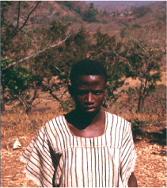

13. Prose Narratives II. Content and Form
What is known: content and plot; main characters. Types of tales: animal tales; stories about people; ‘myths’ ‘legends’ and historical narratives. What demands further study: occasions; role of narrators; purpose and function; literary conventions; performance; originality and authorship. Conclusion.
Against this background of earlier theoretical speculations and misunderstandings, we can now survey the present position in the study of oral prose narration in Africa. What points have been established so far? And what aspects now need further investigation?
I
First, the basic material. Of actual texts, synopses, and translations of African narratives we have a vast amount. Bascom, in his indispensable survey (Bascom 1964), lists forty-one peoples for whom collections of fifty or more tales with vernacular texts had been published by 1964. He adds a further list of forty-nine groups for which collections of at least fifty tales have appeared in translation (with fewer African texts), and further collections are appearing-all the time.1
These collections are of very variable quality. It is often not made clear how they were recorded—on tape, from dictation, by the tellers themselves, or even written by hired schoolboys who are often unskilled in the local arts of story-telling and certainly not experienced in the near impossible task of transforming the oral art form into the medium of the written word. The resulting texts are often little more than abstracts or summaries of the plots—a perfectly adequate source when all one wants to consider is the origin of the plot or its relevance for social structure or education, but clearly quite inadequate for analysis in depth. When only translations are given, there are additional difficulties. The problems involved in any translation, let alone from a totally unfamiliar culture, are of course notorious—not that this has deterred some collectors from going through a double process of translation prior to the publication of their collections.2 But quite apart from this there is the added point that when none of the original texts is provided it is not possible even for someone who knows the language to check the basic trustworthiness of the translation in the most literal terms. It is often quite impossible to assess how close these translations are to the original texts or whether, as perhaps happens rather often, they are only paraphrases or even touched-up and rewritten versions. What is really needed by now is less emphasis on collecting more and more texts and much more on rigorous and explicit standards in recording and translating.
Using these many available texts, however, it has at least been possible for scholars to establish the very great similarities in African stories from all parts of the continent.3 This includes similarity in plots, in motifs, and to some extent in characters. Only a few instances can be quoted, but these can be followed up in general works on African stories.4
As far as the outline of the plot goes, many of the resemblances are striking. Beyond this, however, there are many differences both of detail and of general treatment. Thus one of the most common plots is the tug of war into which a small animal induces two larger ones to enter in the belief that they are pulling against him. The small animal involved, however, is not everywhere the same. It may be—to mention only a few instances—a hare (e.g. Ila, Shona, Bemba, and many other peoples of Central Africa), a spider (Limba, Temne, and others in parts of West Africa), a mouse (Tetela in Congo), a tortoise, (Mpongwe and others in West Equatorial Africa and coastal areas of West Africa), or, in the related American version, Brer Rabbit. The two large animals who are tricked are most commonly an elephant and a hippopotamus, but a rhinoceros is also sometimes mentioned. Another common plot describes the aggressor out-tricked: an animal tries to kill his rescuer but is outdone by a third character who persuades him to re-enter the trap as a demonstration of the truth of the story, and leaves or kills him there. Among the various characters involved are: for the aggressor—a snake, leopard, or crocodile; for the rescuer (the potential victim)—a child, baboon, gazelle, water antelope, rat, or white man; for the wily character who foils the aggressor—a jackal, hare, pygmy antelope, or spider.5 Similar points could be made with many other plots, by no means all of them to do with animals. There is the story also familiar from the Arabian Nights: three men co-operate to revive the girl they all love, each with magic objects to help them; in the various versions these include, for instance, a casket of dreams, a mirror, or a telescope to see her danger from afar; a magic arrow, a skin, or a hammock to travel instantly to her side; and a snuffbox, switch, or magic medicine to bring her back to life.6 Again, there are the many tales about the origin of death that centre round the message sent by God endowing mankind with life, the right messenger being superseded or outstripped, and a second messenger bringing the wrong message—that of death. But the actual messengers named, the title of God, and even the exact framework take different forms in different areas.7 Another common a build-up story in that the hero, sometimes a young boy, sometimes an animal, gradually acquires more and more valuable objects by, say, trading, exchange, or refusal to fight unless given his wish. Finally he reaches the pinnacle of any man’s desires, in some versions followed by the anti-climax of losing the precious object and being back where he started.8
Rather than prolonging this list indefinitely, two versions of the ‘same’ plot may be quoted to illustrate how much they may in fact differ in tone and character even when the subject-matter seems very close. The plot offers explanations for the way birds of prey swoop down and carry off chickens from the mother hen. According to the story, this is in return for a debt the hen owes from the old days. In both cases the version given is chosen for its brevity; many longer stories have been recorded from each society.
First, a version from the Kikuyu of East Africa, recorded by Cagnolo who had spent many years in the area.
The Vulture and the Hen
Long ago the hen and the vulture used to live on excellent terms, helping each other at any time they needed a hand to procure their domestic necessities.
One day the hen thought of borrowing a razor from the vulture, to shave the little ones. The shaving was already much overdue, but it couldn’t be helped, because she had no razor, and was depending on the kindness of her neighbours. So the hen went to see the vulture and said: ‘Dear vulture, I should like to borrow your razor; mine was lost months ago. My little ones are looking very ugly, and also very untidy, with their long unkempt hair overgrown.’
The vulture listened to the hen with great concern and, after a short silence, said: ‘Dear hen, I cannot refuse you this favour. To-morrow perhaps I might need your help as well, and we must help each other. However, you must remember one thing. You know what that razor means to me. I have no other income except the rent of that razor; that is to say, that razor is my field, whence I get my daily food. I do not intend to ask you any fee as I do with others; but please be careful to return it to me, as soon as you have finished your shaving.’
‘Thank you, brother vulture, I quite understand what you say, and I am very grateful to you. I’ll bring it back very soon.’
The hen was very glad of the favour, and as soon as she arrived home, made arrangements to be shaved by another woman. The following morning she also shaved her two little ones, so that the whole family was now shining like the moon. The work over, instead of immediately returning the razor to the owner, she put it in a leather purse, which was hanging in a corner of the hut.
The days passed, and passed away like the water under the bridge, but the hen never thought again of returning the razor to the vulture. She forgot it completely. The vulture grew impatient, and deeply resented in his heart the unkindness, nay, the ingratitude of the hen. Pressed by necessity, he decided to go personally to the hen and demand his razor.
‘Oh dear vulture,’ said the hen with confusion and great regret, ‘forgive me; I am so sorry for this my negligence. I really intended to return your razor very soon, but I put it in my leather bag, and forgot it completely. Let me go and take it; you will have it in half a minute.’
‘Yes, I know you are a forgetful creature; but look at the damage you have caused me. You have deprived me of my sustenance for many days. Mind you, if you have lost it, you will pay for it and very dearly’, said the vulture. The hen rushed into the hut to fetch the razor. She plunged her hand into the leather bag, but alas! it was empty; there was no razor in it. She was very shocked at the unpleasant discovery. She started searching on the floor to see if by chance it had dropped from the bag, but there was no finding it. She looked under the children’s bed, near the fire stones, in the store; but there was no sign of it. Tired and defeated, she came out and, imploring, said: ‘O dear friend and master, I can’t find it. Have mercy on me! I will search better; I am ready to demolish my hut altogether, and search diligently until I find it and return it to you.’
‘I told you to be very careful, and I repeat it again: I want my razor back! But mind, I want the very one I gave you, and no substitute.’
The poor hen spent all the day searching and searching, but nothing came to light. She demolished her hut, and started searching in the roof-grass, among the rabble of the walls, between the poles, in the ashes, and even in the rubbish pit; but nothing was found.
The following day the vulture came to see the results of the searching. He found the hen still scratching the ground among a heap of dry grass and ox dung; but no razor was yet discovered.
‘I am very sorry, dear hen,’ said the vulture, ‘but now I cannot wait any longer without compensation for my razor. For to-day you must give me a chicken. To-morrow I will return and see what has happened in the meantime.’
So the vulture flew away with a chicken gripped within his talons under its breast. The following day he returned to the hen. She was still scratching the ground; but she could not see any razor. Another chicken went with the vulture. And the same happened in the following days until to-day. That is the reason why the hen is always scratching the ground, and the vulture swooping on chickens even in our days. The hen is still searching for the razor, and the vulture compensating himself for its loss
(Cagnolo 1953: 129–31).
The second instance is one of the stories I recorded among the Limba of Sierra Leone.9
The Finch, the Eagle, and the Hen
The finch, a small bird, once borrowed money from the eagle’s grandfather. He borrowed that money.
Now the eagle—(he died) leaving his children alone. But he left a message with them: ‘Your grandfather had money borrowed from him by the father of the finch.’
Since he (i.e. his family) had lent the money, the (young) eagle spent a long time looking for the finch. He looked and looked; but he could not find him.
One day he went and sat down where they pound the rice. He was sitting there. When he saw the hen standing there, eating the rice, he asked her:
‘Oh, hen.’
‘Yes?’
‘What are you doing here?’
‘I am getting my food’.
‘Do you know whereabouts the finch is? He’s the one I’m looking for. He made use of my father’s property. I want him to return it ….10 Do you think I will be able to find the finch?’
‘Yes, you can find him.’
‘Well, how can I find him?’
‘When people get up to go and pound the rice, if you go there and you hide you will find the finch there.’11
The eagle got there. He went and hid. The finch alighted and began to pick at the ground, searching for his food. The eagle swooped down.
‘Ah! you! What a long time I have spent looking for you. Now here you are today. Today you will have to give me back the property your family took.’
‘What?’ asked the finch. ‘Eagle?’
‘Yes?’
‘Who told you where I was?’
‘The hen.’
‘It was the hen that told you?’
‘Yes.’
‘Oh! dear!’ (said the finch) ‘We have both been having trouble then. I—ha! I have been looking for the hen here but could not find her. And all the time you have been looking for me and could not find me! Since the hen was the reason you found me, that’s why I am going to give her to you now.’
(The eagle did not believe the finch.)12
‘Haven’t you seen my house (then)?’
He (still) did not believe.
‘Eagle’ (said the finch).
‘Yes?’
‘Come on.’
They went. They went and stood near the wall (where the finch lived).
‘Here is where you can tell that my grandfathers owned her (the hen) as a slave. As for the hen-family—just look here at where my children sleep. You can’t find any leaves there, can you, only feathers.’13
When they got there the eagle went and looked. He saw the hen’s feathers. He turned them over—and over—and over. He could only see feathers.
‘Yes, finch. You spoke the truth. Well then let there be no quarrel between us (two).’
‘I will give you the hen-family, my slaves.’
That is why hens are carried off by eagles. That is the story. It is finished.14
The difference between the two stories is more than merely a matter of translator’s style. Both tales give an aetiological explanation of the present misfortunes of chickens and trace this back to a debt (or alleged debt) by the hen; but the framework, the detailed course of the plot, even the implied evaluations of the characters are very different. The subject-matter and literary structure of each story can only be fully appreciated (as distinct from appearing as a catalogue item) with a detailed knowledge of the social and literary experience from which it springs. Indeed, the treatment and impact of stories based on the ‘same’ plot or motif can vary considerably, even in the same society, if told by a different individual or even, in some cases, by the same individual on different occasions.15 All this, too, is not to mention the aspect of actual performance which, it is worth repeating, cannot come across at all in a written version, but may appear on the actual occasion of telling as the most noticeable distinguishing characteristic of the story.
Even if the great similarity in plots gives a slightly misleading impression of the degree of cultural uniformity actually involved, this information does throw some light of a limited kind on the sorts of plots that have wide popularity and the continually recurring situations that are the subjects of so many African stories throughout the continent.16
Characters of African stories also recur throughout the continent. Most familiar of all are the animals, particularly the wily hare, tortoise, spider, and their larger dupes. But there are also many stories about people, ordinary and extraordinary, some about legendary heroes or ancestors, and a few which recount the actions of various supernatural beings. They are also occasionally woven round other personified objects like, say, the parts of the body, vegetables, minerals, the heavenly bodies, or abstractions like hunger, death, or truth. These various characters do not usually appear in strictly separate cycles, but in many cases are depicted as interacting among themselves: thus a story mainly about animals may introduce a human being or even God as one of the figures, or a human hero can be shown as succeeding through his magical powers in speaking with and enrolling the help of various animals. The same general plots may be centred round different types of characters in different areas, or even on different occasions in the same society. In Lamba stories, to cite just one instance, ‘the exploits of the little-hare and of a curious little human being, Kantanga … are very much the same’ (Doke 1934: 358). In other cases it may be rather ambiguous whether the central figure is really animal or really human, and it may appear in different guises on different occasions. The Kikuyu Wakahare, for instance, appears sometimes as a squirrel, sometimes as a human, the Zande trickster is called ‘spider’ but envisaged as a man, while the famous Zulu equivalent of Tom Thumb and Jack the Giant Killer rolled into one, uHlakanyana, is usually a tiny clever boy, but in other contexts appears as a weasel.17.
In spite of such overlap between the appearance of these various characters, it is convenient to discuss the various types of stories by differentiating them roughly in terms of their main characters. We will thus discuss in turn stories based mainly on animal characters, on human characters, and finally on historical and on supernatural beings of one kind or another (‘myths’). That it is not possible to regard these general types as clear-cut categories will be clear both from the way the characters overlap and from the general remarks in the previous chapter on the difficulties of producing clear typologies in the case of such flexible and variable material. This indeed is why the material has been presented in a single chapter here rather than as separate chapters under the popularly acceptable headings of ‘animal stories’, ‘myths’, ‘legends’, etc. However, in view of the nature of the sources available and for mere convenience of discussion, we can speak of animal tales, tales about people, and so on, at the same time insisting that in view of the overlapping and impermanence of any given story, these must not be regarded as categories in any generally valid typology of African narratives.
II
When we consider the many animal tales that have been collected from Africa, the main factor that has struck most observers is the great emphasis on animal tricksters—small, wily, and tricky animals who cheat and outdo the larger and more powerful beasts. They trick them in a pretended tug of war, cheat them in a race, deceive them into killing themselves or their own relations, gobble up their opponents’ food in pretended innocence, divert the punishment for their own misdeeds on to innocent parties, and perform a host of other ingenious tricks.
The actual author of these exploits varies in different areas. Among most of the Bantu peoples it is the little hare, an animal that also occurs as a main character in some of the savannah areas of West Africa; as ‘Brer Rabbit’ he also appears in similar stories in the New World.18 The spider19 is the main character in most of the forest regions of West Africa, particularly in the westerly parts including Ghana, Ivory Coast, and Sierra Leone; he also comes into Hausa stories to the north, Luo and Zande tales in Central Africa, and corresponds to ‘Annancy’ in the West Indies, a name that directly recalls the Ghanaian Ananse, the Akan spider. The tortoise predominates in the easterly regions of the west coast, in an area extending at least from the Yoruba of Nigeria across to the Fang and others of West Equatorial Africa. The tortoise also comes into other areas in a lesser way; among the Ila of Zambia, to give one example, the main cycle of tales are about Sulwe, the hare, but there are also a number about Fulwe, the tortoise. There are also a few other favourite trickster characters who occur often enough in stories but without any clear-cut geographical domain: the little antelope, often portrayed as innocently ingenious; the squirrel (e.g. in many Limba, Kikuyu, and Luba stories); the wren (in Luba tales); and a few with more purely local reference: the small weasel who appears among the Zulu and Xhosa, most often apparently personified as a small boy; and the jackal trickster in Hottentot animal stories, as well as in some Zulu, Xhosa, and Sotho tales.20
Though all these trickster figures tend to get up to the same kinds of tricks in story after story, they cannot altogether be assimilated to each other. The spider, for instance, though often wily, is also, in some areas at least, depicted as stupid, gluttonous, boastful, and ineffective, not infrequently outdone by his own wife. There are also instances of the same image being applied to the tortoise.21 On the other hand, the sly effectiveness of the hare is what we notice in most Bantu tales. All these tricksters, however, are adaptable. They are able to turn any situation, old or new, to their advantage. The tortoise now aspires to white collar status in Southern Nigeria and attends adult education classes, (Berry 1961: 14) while the spider Ananse referees football matches among the Ashanti in Ghana. (Nketia 1958d: 21)
Besides the leading animal figures, there are also many others who come into the tales in secondary roles. Some of the stock characters associated with them are common to many areas: the lion, strong and powerful but not particularly bright; the elephant, heavy, ponderous, and rather slow; the hyena, the type of brute force and stupidity, constantly duped by the little quick animals; the leopard, untrustworthy and vicious, often tricked in spite of his cunning; the little antelope, harmless and often clever; the larger deer, stupid and slow—and so on. (Not all these occur in all regions or all stories in exactly the same way.) Surprisingly, other animals—the zebra, buck, or crocodile—seldom occur, or, if they do, tend to come in just as animals and not as the personified characters presented by those already mentioned.22 One final and rather different animal character that must be mentioned is the mantis in Bushman tales. He is the favourite hero in Bushman narratives, and though he shares some of the qualities sometimes attributed to tricksters (powerful and foolish, mischievous and kind), his supernatural associations and the unusual type of action in these stories set him rather apart from leading animal characters in narratives elsewhere in Africa.
With few exceptions, these animals are portrayed as thinking and acting like human beings, in a human setting. This is sometimes brought out by the terminology, like the personal prefix used in Sotho to turn the ordinary form of, say, lion (tau) into a personal form (motau—Mr. Lion) (Smith and Dale ii, 1920: 339), or the class of honorific plural in Lamba which makes an ordinary animal term into a personal name—‘Mr. Blue-Snake’ (Doke 1939: 95). In other cases no grammatical change is or needs to be made. The animals act like human characters, experiencing human emotions. And yet the fact that they are also animals is not altogether lost sight of. This can be exploited either through grammatical forms, like the alternation in Zande stories between animal and personal pronouns, (Evans-Pritchard 1967: 26) or through allusions to the animal’s characteristic cry, appearance, or behaviour to add to the wit or incongruity of the presentation. In a Limba tale, for instance, a spider is shown taking off his cap, gown, and trousers in a vain attempt to placate his magic pot; in the story he is unquestionably like a man—albeit an absurdly foolish man—with a house, wife, and human garb, but the fact that he is, nevertheless, a spider struggling with all these clothes adds just the extra understated touch in the telling which makes the whole story very funny.
Many of these stories are light-hearted, even satirical, and centre round the tricks and competitions of the hare, spider, or their friends, set in a wide range of adaptable and adapting situations. But there are also more serious themes. One common form is a story ending up with a kind of moral, sometimes in the form of a well-known proverb. The listeners are told that they can learn a lesson from the experiences of the animals in the tale—that, say, one should not be rude to one’s mother-in-law, that men’s words are more weighty than women’s, that strangers should be treated well, that it is ill-advised to oppress the weak, or even that determination sometimes triumphs over virtue. In some places too, Christian morals are specifically introduced, e.g. among the Luba. (Stappers 1962: 14) In such narrations the moral element sometimes seems to form the core of the story, so that we could appropriately term it a parable rather than a straightforward story. But in other cases, sometimes even those from the same area or teller, the moral seems no more than a kind of afterthought, appended to give the narration a neat ending.
Another very common framework is that in which an explanation is given for some present behaviour seen in the world, or a known characteristic of some animal or bird. For example, to cite a few titles at random from one society (Ila of Zambia), we have stones about how the Ringdove came by its ring, how Ringdove got her name, how Squirrel robbed Coney of his tail, how Squirrel and Jackal became distinct, how Skunk came to be a helper of man, why Duiker has a fine coat and particoloured tail, why Zebra has no horns, why there are cracks in Tortoise’s shell—and so on (Smith and Dale ii, 1920: Ch. 28). These aetiological themes are not just confined to animal stories but can occur in all types of African tales. However, they seem to be a particularly popular and fertile theme when the main characters are animals, and some striking animal characteristic, well known to the listeners from their own observation, can be wittily ‘explained’ in the story. Not all the aetiological tales are equally humorous and light-hearted. A few explain more serious matters: in these cases the animals are often depicted as interacting with humans or with God as well as with other animals; they explain, for instance, the origin of murder, of death, or of chiefship.
An explanatory ending, in fact, can apparently be tacked on to almost any plot as a pleasing framework and conclusion fitting in with current literary conventions—once again, we see that animal trickster stories, aetiological tales, or even ‘myths’ are not mutually exclusive types but merely favourite themes which may or may not be combined in any one story. An example of the nonessential nature of the aetiological conclusion can be seen from the following Kikuyu tale where the explanation at the end sounds very much like an afterthought.
The Hyena, Wakahare, and the Crow
One day a Hyena went together with Wakahare to collect honey in the forest, where men used to hang their beehives from the trees. Wakahare climbed the tree, extracted big lumps of combs full of honey from a beehive, and when he was satiated, said to the Hyena: ‘Open your mouth and I will drop some honey into it.’ The Hyena did so and swallowed the honey with great pleasure several times, until she was also satisfied. Then Wakahare left the tree and returned to the ground. He asked the Hyena: ‘How did you enjoy the honey?’
‘Very, very much, what bliss, my dear friend.’
‘But remember,’ said Wakahare, ‘this is a kind of sweetness that must not be evacuated from your body.’
‘Yes, I think it must be so; but how can one prevent it from going out?’
‘I’ll tell you what to do. I will stitch your orifice together with your tail and you may be sure that no sweetness will come out.’
‘Good, my friend, do it for me, please.’ Wakahare fetched a few sharp thorns and stitched the orifice with the tail of the Hyena and went off. After some time the Hyena felt a terrible urge to evacuate. She looked around for help, but nobody was to be found. At last a Jackal happened to pass thereat. ‘Oh, dear friend Jackal,’ said the Hyena, ‘come please, and help me.’
‘What can I do for you, dear friend?’
‘Please, release a little bit the stitches which are at the neck of my tail. I cannot bear it any longer.’
‘Sorry, my friend, I am unable to do that. I know you have diarrhoea habitually, and don’t want to be splashed with a discharge of that kind.’ And so saying, he went on. After some time a Serval arrived on his way to the forest. The Hyena beseeched him for help.
‘Sorry, Mrs. Hyena, you are very prone to discharge violently,’ said the Serval, I don’t want to be buried under your excrements.’ He too went his way without looking back. Later on a Hare passed by. The Hyena asked again for help, but to no avail.
‘I am very sorry,’ the Hare said, ‘don’t you see how clean I am? I am going to a feast. I don’t want to soil my dress and get untidy for your dirty business.’ He too went his way leaving the Hyena groaning and tossing on the ground on account of the pain she was suffering. At last, a Crow perched on a tree nearby. Looking down at the Hyena lying still on the grass, he thought she was dead, and began to foretaste a good meal: but as he was planning what to do next, the Hyena opened her eyes and seeing the Crow on the tree, said: ‘Oh dear Crow, dear friend of mine, help! help! please.’ The Crow left the tree and approached the Hyena. ‘What is the matter with you?’ he asked.
‘Oh please, release a bit the stitches in my tail. I am dying of the urge of my body and I cannot evacuate.’
‘You say dying; dying?’
‘Yes, help me please.’
‘But you see, I am only a bird with no paws. How can I help you with that business?’
‘Oh dear, try as much as you can and you will succeed.’
‘I doubt very much, and besides that I am very hungry. I have no strength to do any work.’
‘O nonsense! My belly is full of meat. You will eat to-day, to-morrow, and the day after to-morrow and be satiated.’ On hearing that, the Crow set himself to think and after a little while decided to see what he could do. With his strong bill he succeeded in extracting the first thorn, and truly, two small pieces of meat fell on the ground. The bird devoured them very greedily, and encouraged by the success, began to tackle the job seriously. After great effort he succeeded in extracting the second thorn, but alas! a burst of white excrement gushed forth with such vehemence, that the poor Crow was cast back ten feet and was buried head and all under a heap of very unpleasant matter. The shock was so great, that he remained buried for two days, until a great shower of rain washed the ground, freeing the Crow of the burden. He remained a full day basking in the sun and regaining strength. He was so weak that he could not fly. The Crow was washed by the heavy rain, but his neck remained white. That is the reason why crows to-day have a white collar in their plumage. The Crow very much resented the alteration of his plumage and decided in his heart to take revenge.
One day he heard that the hyenas had arranged for a great dance in a thicket he knew very well. He cleaned himself with great care in the morning dew, put on a beautiful string made of scented roots and proceeded to the meeting place. On his arrival he was greeted by the hyenas and several of them asked him to give them some of those little pieces of meat he wore around his body. They took his ornamental beads to be meat. He refused to give any of the beads away, but rising on his feet with an air of dignity, he said: ‘My dear friends, forgive me this time, I cannot give away this kind of meat, which is specially reserved for our kinship, but I promise you a great quantity of good meat and fat if you follow me to the place I am going to show you.’
‘Where is it?’ they asked very anxiously.
‘You see, we birds fly in the air and our deposits of food are not on earth, but on high for safety’s sake. Look up at the sky and see how many white heaps of fat we usually store there. That’s where you will find meat and fat in great quantity.’ The hyenas gazed up to the sky and asked: ‘But how can we get there?’
‘Will show you. You can reach there very easily. Now, let us make an appointment. The day after to-morrow we will meet here again. Tell your people, old and young, men and women to come here with baskets and bags; there will be meat and fat for all.’ On the day appointed the hyenas came in great numbers. I think the whole population was there. The Crow arrived in due time. He started by congratulating the crowd on their punctuality, and with great poise said: ‘My dear friends, listen now how we are going to perform the journey to the place of meat and plenty. You must grapple one another by the tail, so as to form a long chain. The first of the chain will hold fast to my tail.’
There was a general bustle among the hyenas, but after a few moments all were in order. At a given sign, the Crow began to fly, lifting the hyenas one by one till they looked like a long black chain waving in the air. After some time he asked: ‘Is there anybody still touching ground?’ The hyenas answered: ‘No, we are all in the air.’ He flew and flew up into the sky for a long time and asked again: ‘What do you see on earth? Do you see the trees, the huts, the rivers?’
‘We see nothing but darkness’, they answered. He flew again for another while and then said to the hyenas nearby: ‘Now, release for a while, that I may readjust my ornaments.’
‘But dear friend, how can we do it? We will surely fall down and die.’
‘I can’t help it. If you don’t release me, I will let go my tail, I am sure the feathers will grow again.’
‘Oh dear friend, don’t, please don’t for your mother’s sake, we would die, all of us.’ The Crow would not listen at all. He thought the time had come for his revenge. With a sharp jerk he turned to the right. The feathers of his tail tore out, and with them the long chain of hyenas. They fell heavily on the ground and died. One of them escaped with a broken leg. She was pregnant and so saved the kinship from total destruction. That is the reason why hyenas these days limp when they walk (Cagnolo 1952: 128–9).23
One of the obvious points in these stories is just the sheer entertainment afforded by the description of the amusing antics of various animals, and they are often told to audiences of children. The fact that most of the animals portrayed are well known to the audience—their appearance, their behaviour, their calls, so often amusingly imitated by the narrator—adds definite wit and significance that is lost when rendered for readers unfamiliar with this background. The gentle, shy demeanour of the gazelle, the ponderous tread of an elephant, the chameleon’s protuberant eyes, or the spider’s long-legged steps are all effectively conveyed and provide a vivid and often humorous picture for those present. It is true that the imagery associated with the animal figures in tales hardly matches that implied in other contexts (praise songs for instance, as pointed out in James 1964: 216). But on a straightforward and humorous level the animals that appear in the stories can be appreciated and enjoyed for their amusing antics or their vivid portrayal by the narrator.
But there is more to be said than this. On another level, what is often involved in the animal stories is a comment, even a satire, on human society and behaviour. In a sense, when the narrators speak of the actions and characters of animals they are also representing human faults and virtues, somewhat removed and detached from reality through being presented in the guise of animals, but nevertheless with an indirect relation to observed human action. As Smith writes of the Ha, in words that can be applied far more widely:
In sketching these animals, not Sulwe and Fulwe [Hare and Tortoise] only, but all the animals in these tales, the Ba-ila are sketching themselves. The virtues they esteem, the vices they condemn, the follies they ridicule—all are here in the animals. It is a picture of Ba-ila drawn by Ba-ila, albeit unconsciously…
(Smith and Dale ii, 1920: 341)
There is no need to try to explain the occurrence of animal stories by invoking outdated theories about totemism or the unfounded notion that ‘primitive man’ could somehow not clearly distinguish between himself and animals. Nor need we refer to literalistic interpretations of the stories, and assume that in each case they present clear-cut moral messages, like the protest of weakness against strength, or a direct one-to-one reflection of human or local society, or specific references to definite individuals—though there are occasional instances of the last category.24 Rather we can see these animal stories as a medium through which, in a subtle and complex way, the social and literary experience of narrators and listeners can be presented. The foibles and weaknesses, virtues and strengths, ridiculous and appealing qualities known to all those present are touched on, indirectly, in the telling of stories and are what make them meaningful and effective in the actual narration. In contexts in which literary expression is neither veiled by being expressed through the written word nor (usually) voiced by narrators removed from the close-knit village group, comment on human and social affairs can be expressed less rawly, less directly by being enmasked in animal characters.
Some of the plots and explanations in the stories may appear puerile and naive—and so no doubt they are when stripped of the social understanding and dramatic narration that give them meaning. But the background to, say, some little story about a competition between two animals for chiefship, or a race between two birds to the colonial secretariat for the prize of local government office, renders it meaningful to an audience fully aware of the lengths to which political rivalry and ambition can lead men. If we cannot say that such events are represented directly in the stories, we can at least see how the tales strike a responsive chord in their audience. In a way common to many forms of literature, but doubly removed from reality in being set among animals, the animal tales reflect, mould, and interpret the social and literary experience of which they form part.
There is a further point about some of the animal stories. This is the effective use that can be made of the image of the trickster (usually but not invariably an animal). This figure can be adapted to express the idea of opposition to the normal world or of the distortion of accepted human and social values. This applies particularly when the trickster figure is made not only wily but also in some way inordinate and outrageous—gluttonous, uninhibited, stupid, unscrupulous, constantly overreaching himself. Here, the trickster is being presented as a kind of mirror-image of respectable human society, reflecting the opposite of the normally approved or expected character and behaviour.25 Again, the trickster can be used to represent traits or personalities which people both recognize and fear. This aspect has been particularly well described for Ikaki, the tortoise trickster figure among the Kalahari. He appears in both masquerade and story as
the amoral, psychopathic confidence trickster—the type who accepts society only in order to prey upon it … the intelligent plausible psychopath, that universal threat to the fabric of the community.
(Horton 1967: 237)
More than this. Not only does the trickster figure stand for what is feared, his representation in literature also helps to deal with these fears. In the first place, he is represented in animal guise which allows narrator and listener to stand back, as it were, and contemplate the type in tranquillity. Further, by portraying him in stories, people can show the trickster as himself outwitted and overreached, often enough by his own wife. Again, by exaggerating and caricaturing him to the point of absurdity, they in a sense ‘tame’ him. In these various ways
the disturbing real-life experience of plausible psychopaths is controlled, confined, and cut down to size. People laugh from out of their depths at the ravening forest beast, because for once they have got him behind bars.
(Horton 1967: 239)
These animal tales have been the most popular and well-known type of African narrative among many European collectors and readers. The stories are often amusing in themselves, they fitted in with certain preconceptions about, say, totemism or the supposed ‘childlike mentality’ of Africans, and they provided pleasing parallels to the Uncle Remus stories of America which they had ultimately fathered.26 The result is that many more animal stories have been published than those about other characters, and the impression has often been given that animal tales form the main type of prose narrative in Africa or even of oral literature altogether. This in fact is far from being the case. The proportion of animal stories seems to have been much exaggerated, and in some areas at least stories mainly about people or supernatural beings seem to be preferred or to be more elaborate, lengthy, or serious. It is not easy to work out the numerical and qualitative relationship between animal and other stories in different areas. One or two suggestions have been made along these lines—postulating, for example, that animal tales are the most popular form in Central and East Africa, but not at all conspicuous in parts of South Africa.27 But the evidence is hard to assess. Quite apart from the overlapping between animal and other tales, one does not usually know what principles of selection have been adopted in any given collection of tales: even commentators working in the same areas at the same date may differ widely about the relative significance of different types of tales. Perhaps all that can be concluded for the moment at least is that, for all their popularity in Europe, animal tales are not the only or even the most important type of African oral narratives.
Stories about people are, in some areas at least, probably the most important group of narratives. These stories are of many kinds. Some are concerned with marvellous events and personages, some exhibit marked Arabic influence (particularly in the long-established Islamic areas), some deal with everyday events in village life, some with a combination of all these. Like animal stories, some stories contain an aetiological aspect or a moralizing conclusion, others centre round a series of tricks or a competition. There is a definite overlapping in subject and structure, both between various categories of stories about people and, as already remarked, between all these stories and animal tales as a whole.
Less need be said about narratives set in the human world than those about animals. This is not because they are less important, but because, being less well known, they have been less theorized over and confused by Western scholars. It is obvious to most readers that these narratives can be treated as a form of literature comparable to the more familiar types of written fiction rather than analysed as some strange product of a totemistic or as yet childish mentality. After some brief comments on the range of these stories, the narratives can be left to speak for themselves as self-evidently a form of literature.
Many of these stories are about everyday events and characters. They concern such well-known problems as the relations of two co-wives and how these affect their children or their husband; wooing a wife; jealousy between two equals or between chief and subject; the extremes of friendship and affection shown by two companions; or a series of clever tricks by some outrageous but in essence recognizably human character. But even more often, it seems, the story is set back a little further from reality by the introduction of some marvellous element in setting, event, or character. The man who goes to woo a woman, for instance, may have to undergo a series of far-fetched or even magical tests before he can win her—perhaps sowing and harvesting some crop in a single day, or guessing his beloved’s closely guarded and amazing secret, or avoiding death only through the magical help of animals or spirits. Similarly the cunning of the central character may rest on enchanted powers and lead the listener into some far-away world of fantasy. The imagination of both teller and audience can rove freely and the exploits of the hero become the more romantic and exciting for being enacted against this imaginary background.
Other stories could be called thrillers. The hero struggles against ogres and monsters who are trying to devour him. These fearsome ogres are stock characters in many stories in Bantu Africa. There are the one-legged, two-mouthed cannibalistic ogres of East African tales, for instance, the Di-kishi cannibal of Angolan stories (sometimes appearing as a named ‘hero’, Dikithi (Larson 1963)) with his one eye and a single leg made of beeswax, or the half-man, half-animal monsters of some tales in Malawi or the Congo.28 We also meet various powerful monsters, giants, and spirits in West African stories, many of them man-eating but apparently less often physically deformed; a number of them are clearly closely related either to animals29 or to the djinns and genies familiar from Islamic sources. In all these cases, the basically non-human and asocial character of these figures comes through clearly either by reason of their deformities or through their association with non-human creatures.
Even without the appearance of exotic characters and settings, an element of fantasy is often apparent. In one Sierra Leonean story, to give just one instance, a pregnant woman’s belly grew ‘as big as Sierra Leone and Great Britain put together’ Innes 1964: 18). All over the continent kings are represented as possessing exaggerated wealth and power, heroes are revived from death, girls are wooed by hundreds and thousands of suitors, young men win whole kingdoms for themselves by force of arms or politic love, or hunters kill and capture fabulous beasts who bring them all their desires. In the areas strongly influenced by Islam, particularly on the East Coast, we also hear of sultans with wealthy and glittering entourages and of the miraculous assistance given to a hero by genies.
The actual way in which the storyteller’s imagination can combine fantastic elements with his knowledge of the real varies not only from society to society but also from narrator to narrator. Each has his own contribution to make of wit, satire, elegance, or moralizing. It is too simple to pick on just one element, like ‘realism and lack of sentimentality’ or ‘placid serenity’, and extrapolate this to apply to African narratives in general.30 Some are realistic; some very definitely are not—unless by ‘realism’ one merely means that a narrator builds on his own experience of reality to add point and vividness to his literary inspiration, in which case assertions about ‘realism’ become meaningless. Similarly some stories may give an impression of serenity; others most definitely do not. It is better to say that the opportunities for various kinds of literary effect are exploited differently in different contexts, and that even when some of the themes are the same, the actual tone and impact of the story itself may vary in different areas and according to different narrations.
Two brief stories can illustrate this point. In both there is an element of fantasy and a concentration on human action—but the stories are very different in tone.
One Cannot Help an Unlucky Man (Hausa)
There was a certain Man, a Pauper, he had nothing but husks for himself and his Wife to eat. There was another Man who had many Wives and Slaves and Children, and the two Men had farms close together.
One day a Very-Rich-Man who was richer than either came, and was going to pass by on the road. He had put on a ragged coat and torn trousers, and a holey cap, and the People did not know that he was rich, they thought that he was a Beggar. Now when he had come up close, he said to the Rich-Man ‘Hail to you in your work’, but when he had said ‘Hail’, the Rich-Man said ‘What do you mean by speaking to me, you may be a Leper for all we know!’ So he went on, and came to the Poor-Man’s farm, and said ‘Hail to you in your work.’ And the Poor-Man replied ‘Um hum’,31 and said to his Wife ‘Quick, mix some husks and water, and give him to drink.’ So she took it to him, and knelt,32 and said ‘See, here is some of that which we have to drink.’ So he said ‘Good, thanks be to God’, and he put out his lips as if he were going to drink, but he did not really do so, he gave it back to her, and said ‘I thank you.’
So he went home and said ‘Now, that Man who was kind to me I must reward.’ So he had a calabash washed well with white earth,33 and filled up to the top with dollars, and a new mat34 was brought to close it. Then the Very-Rich-Man sent his Daughter, who carried the calabash, in front, and when they had arrived at the edge of the bush35 he said ‘Do you see that crowd of People over there working?’ And she replied ‘Yes, I see them.’ He said ‘Good, now do you see one Man over there working with his Wife?’ And she replied ‘Yes.’ ‘Good’, he said, ‘to him must you take this calabash.’ Then she said ‘Very well’, and she passed on, and came to where the Poor-Man was, and said ‘Hail’, and continued ‘I have been sent to you, see this calabash, I was told to bring it to you.’
Now the Poor-Man did not open it to see what was inside, his poverty prevented him,36 and he said ‘Take it to Malam Abba, and tell him to take as much flour as he wants from it, and to give us the rest.’ But when it had been taken to Malam Abba, he saw the dollars inside, and he put them into his pockets, and brought guinea-corn flour and pressed it down in the calabash, and said ‘Carry it to him, I have taken some.’ And the Poor-Man [when he saw that there was some flour left] said ‘Good, thanks be to God, pour it into our calabash,37 and depart, I thank you.’
Now the Very-Rich-Man had been watching from a distance, and [when he saw what had happened] he was overcome with rage, and said ‘Truly if you put an unlucky Man into a jar of oil he would emerge quite dry.38 I wanted him to have some luck, but God has made him thus.’
(Tremearne 1913: 242–3)
Wacici and Her Friends (Kikuyu)
Wacici was a very beautiful girl, admired by many people for her elegance and charm. Her girl friends were very jealous of her and always ill-treated her.
One day her friends were going to visit a mwehani39 to have their teeth filed, spaced, and beautified as girls used to do. Wacici joined them. He was a man of great fame who was highly reputed for his skill. They all had their teeth well done and the girls looked very attractive and charming, but no one looked as pretty as Wacici. The expert praised Wacici’s teeth and beauty and added that she had natural beauty and charm in everything. This annoyed her girl friends very much.
On their way home they stopped and talked to young men from time to time. They laughed as they spoke to the boys, ‘Aha-aaa! Uuuuuu! Eia!’ This is the most romantic laughter which was artificially employed by Gikuyu girls specially when speaking to boys. ‘Aha-aaa! Uuuuuu! Eia!’ They continued to laugh repeatedly as they spoke to young men and the boys would admire their teeth and their charm and sense of humour.
‘You have been to the tooth expert, have you not?’ the boys inquired.
‘Aha-aaa! Uuuuuu! Eia!’ The girls continued to laugh.
‘Wacici is looking most attractive (i.e. an expert in beautifying teeth), one boy remarked kindly, ‘she is really gorgeous and wonderful.’ And all the boys agreed and repeated this remark to Wacici. This infuriated the girls, who were very jealous of Wacici’s beauty and many of them wanted her out of their company.
The girls continued their journey towards their homes and on the way they all conspired to bury Wacici alive in a porcupine hole which was somewhere in the forest near the road.
It was suggested that they should all enter the forest and gather some firewood to take back home as it was the custom that girls should return to their homes with some firewood after a day’s outing. They all agreed to do this and Wacici particularly was very eager to take home some firewood. She was not only a beauty but also a very good girl who upheld the respect expected of Gikuyu girls, and her mother loved her dearly.
When the girls reached the porcupine hole in the forest, they grabbed Wacici and pushed her down the hole and quickly buried her alive. She was taken by surprise and she did not have a chance to scream as she thought that they were playing with her. They did not beat her or do anything harmful to her body. They sealed the hole very carefully on top, quickly left the forest and returned to their homes; they did not speak to anybody about Wacici.
That evening Wacici did not return home. Her parents waited and waited. When she did not come they went about asking Wacici’s friends if they had been with her that day or whether they had seen her anywhere. They all denied having been with her or seeing her anywhere that day. All this time Wacici was crying in the bottom of the porcupine hole in the forest while her parents were wandering all over the villages looking for her.
‘Where has she gone to?’ her mother asked. ‘Could a young man have eloped with her?’ Her disappearance caused so much concern that her father had to go to consult witch-doctors and seers and ask what had become of his daughter.
Next morning Wacici’s father met somebody who had seen his daughter in company of the other village girls going to the tooth expert. He reported this to his wife and without wasting any time he went to see the dentist in order to verify this information. The dentist confirmed that Wacici and her friends had been to see him and that he had done their teeth on the day she was reported missing. Also on his way home Wacici’s father met some young men who had seen and spoken to his daughter with the other village girls. He returned home and reported to his wife and the family all the information he had gathered.
Wacici’s brother, who knew most of the girls who were said to have been seen with his sister, had known for some time that most of the girls had been jealous, and hated Wacici. He suspected foul play.
He left home quickly and tracked the route through which the girls had returned from the expert. He knew that if they gathered some firewood, they must have entered the forest on the way. He went into the forest to check if his sister had been killed there.
When he came near the porcupine hole he noticed that it was freshly covered and that there were many footmarks which suggested that many people had been there. He examined them very carefully. He also saw a bundle of firewood which had been abandoned. This time Wacici could hear some noise and footsteps above her. She was crying and singing and calling her brother’s name.
| Cinji! Cinji! Nondakwirire-i! Cinji, Nothiganagwo-i! Cinji; Cinji! Cinji! |
Cinji! Cinji! I already told you, Cinji, I have been hated and spied on, Cinji; Cinji! Cinji! |
When he listened carefully he heard the voice of Wacici clearly and he had no doubt that she had been buried there by her girl friends who were jealous of her beauty.
He called out, ‘Wacici-i! Wacici!’ Wacici heard him and she felt so happy that he had come to liberate her. She answered quickly, ‘Yuu-uuu!’
At once her brother started digging and removing the soil. He dug and dug until he came to where she was sitting and crying. He carried her to the surface and examined her: she was in good shape except that she had weakened because of hunger and fear. He took her home and her parents were so happy to see her again. She was given a good bath and a lamb was slaughtered to offer thanksgiving to Mwene-Nyaga who had preserved her life.
Wacici reported what her friends had done to her. The following morning the evil girls were arrested and sent to a trial before the elders in a tribunal court and their fathers were heavily fined. They had to pay many heads of cattle and many rams and bulls were slaughtered and a lot of beer had to be brewed for the judges and the elders to eat and drink. The bad girls were exposed and they were all shunned in society and were unable to get husbands for a long time. Wacici was widely respected and she got married and became a mother of many children and lived happily ever after. (Njururi 1966: 86–9)
The characters in these tales are sometimes given names. Some societies have their own favourite named heroes, often of a trickster type, for instance the Lamba Kantanga (a little mischievous fellow), the Zanda Ture or Tule (an amusing rogue), the Zulu Uthlakanyana when appearing as a human (a deceitful and cunning little dwarf), the Fon Yo (a glutton with various supernatural powers), and so on. As with animal tales it would be misleading to assume that all these stories about named characters fall into clear-cut cycles in an attempt to give an overall and in principle unitary history of the hero. In some cases at least there seems to be no attempt at consistency or chronology, the stories are told as short independent narrations on different occasions, and their inclusion into one united narrative may represent the outlook of the Western systematizing scholar rather than the intentions of the narrators.40 Other characters in African stories are named but totally independent in that they occur in only isolated stories. The names are merely taken, it seems, from everyday names in current use and given to a character for ease of reference. Or, alternatively, the name itself has meaning and contributes to the effect of the story, though without necessarily carrying on into other similar stories, like the Zande ‘Man-killer’ and ‘One-leg’, or the Limba brothers ‘Daring’ and ‘Fearful’.
In very many cases, however, the characters are not given names. They appear just as ‘a certain woman’, ‘a chief, ‘a small boy’, ‘a hunter’, ‘two twins’, and so on. Each literary culture has its own stock figures whose characteristics are immediately brought into the listeners’ minds by their mere mention. Thus the Ila are particularly fond of stories about fools (Smith and Dale ii 1920: 404ff), the Kamba especially like tales about those ‘chosen from the extreme bracket of society’ like the one-eyed, sickly, orphan, widow, very poor or despised (Mbiti 1959: 257) and the Hausa, among others, make great play with the theme of the unfaithful wife. Some stock characters have wide application and appear in various contexts in the stories of many African peoples. We often hear of the actions of a jealous husband, a boaster, a skilful hunter, an absurdly, stupid person, a despised youngster making good, a wise old woman, an oppressive ruler, twins, good and bad daughters, or young lovers. The basic human dilemmas implied by so many of these figures have clearly brought inspiration to hundreds of story-tellers practising their otherwise diverse skills throughout the continent.
When we come to consider the types of African stories usually termed ‘myths’ we run into some difficulty. This is partly because ‘mythology’ is sometimes loosely used to cover all kinds of prose narratives, including ordinary animal tales and. stories about people.41 More important, however, is the point that if we accept either the popular or the scholarly distinction of ‘myth’ from ‘fictional’ narrative; this does not seem to fit much of the African material. As it is not possible to touch on every single case it may be helpful to make some rather general comments about the problem of delimiting and discussing African ‘myths’. This will involve recapitulating several points touched on earlier.
One recent account of what is meant by ‘myth’ is that put forward by Bascom, based among other things on his assessment of how this term has been used by students of oral literature. This provides a convenient starting-point. He writes:
Myths are prose narratives which, in the society in which they are told are considered to be truthful accounts of what happened in the remote past. They are accepted on faith; they are taught to be believed; and they can be cited as authority in answer to ignorance, doubt, or disbelief. Myths are the embodiment of dogma; they are usually sacred; and they are often associated with theology and ritual. Their main characters are … animals, deities, or culture heroes, whose actions are set in an earlier world, when the earth was different from what it is today, or in another world such as the sky or underworld …
(Bascom 1965b: 4)42
This account fits well with the everyday connotations of the term ‘myth’ in terms of the content, the authoritative nature of these narratives, the way in which they are believed, and their special context and characters, often consciously distinguished from other less serious narratives.
When this sense of the term is taken, it seems evident that myths in the strict sense are by no means common in African oral literature. This is in spite of the narratives presented as myths in many popular collections.43 It is true that many of these have an aetiological element, refer to supernatural beings, or are concerned with events set in some remote time in the past. But they do not necessarily possess the other attributes of ‘myths’—their authoritative nature and the way in which they are accepted as serious and truthful accounts. It is seldom, also, that we seem to find narratives depicting the activities of deities or other supernatural beings alone or even as the central subject44 much more frequently the interest seems to be centred on human or animal characters with supernatural beings only appearing in secondary roles. Radin’s remark in 1952 that cosmological myths are rare in Africa compared to their significance among, say, the Polynesians or American Indians (Radin 1952: 2) has not been invalidated by evidence produced since then. And one could go further and say that myths in any strict sense do not seem, on the evidence we have, to be a characteristic African form at all.
It is worth pointing out the actual classifications made in several African societies between different types of narrative. Though these may not amount to a distinctive category of myth, they do provide a somewhat analogous though less marked contrast between more fictional tales and those said in some sense to be ‘true’. This can be illustrated from three or four of the better-studied African cultures.
First, the Fon of Dahomey. They generally distinguish in terminology between hwenoho and heho, a distinction only at first sight corresponding to ‘myth’ as against ‘fiction’. Hwenoho is literally ‘time-old-story’ and includes, to use Herskovits’s terms, ‘myths’ (stories of the deities and the peopling of the earth), ‘clan myth-chronicles’ (telling of the origin and adventures of the powerful families), and ‘verse-sequences’ (sung by professional poets to memorize genealogies and events incorporated into ritual or law). (Herskovits 1958: 17) These narratives are not presented with the same art and dramatization as more fictional tales, and tend to be told by specialists (priests, diviners, etc.) or within a small family group, particularly a family council. The elements of entertainment and of conscious artistry seem relatively unimportant. The second group of Fon narratives, the heho, covers more light-hearted stories. There are tales about various supernatural, human, and animal characters: about hunters, women, twins, orphans, or children-born-to-die; about the trickster-deity Legba or the mythical Yo with his gross appetites; and various kinds of explanatory and moralizing tales. All these latter stories are normally told at night. Some of them also occur in the context of divination45 where they may appear on the surface to be obviously ‘myths’—yet they are locally classified as heho. In fact, as Herskovits points out (1958: 25–26), the classifications are not absolutely clear-cut ones; there is overlap between them in terms of symbolic characterization, plot, motif, and function.
In these and some other West African cases the local classifications bear some resemblance to the general distinction between ‘folktale’ (or ordinary fictional narrative) on the one hand and a blend of myth-legend on the other.46 In other cases, however, either no such distinction is made at all, or else what there is makes rather different, sometimes more complicated groupings. The Kimbundu classifications, for example, divide narratives into three main groups (excluding the closely related proverbs, jisabu). There are, first, the stories regarded as fictitious, misoso, arising from imagination. ‘Their object’, writes Chatelain, ‘is less to instruct than to entertain, and to satisfy the aspirations of the mind for liberty from the chains of space and time, and from the laws of matter’ (Chatelain 1894: 21). This class includes animal tales and stories about the marvellous and supernatural. Secondly there are the maka, reputedly true stories or anecdotes. These are instructive as well as entertaining, and are socially didactic, concerned with how to live and act. Finally there are the ‘historical narratives’—malunda or misendu—the chronicles of the tribe and nation transmitted by headmen or elders. They are considered to be state secrets and ‘plebeians get only a few scraps from the sacred treasure of the ruling class’ (Chatelain 1894: 21).
Another local classification that does not exactly fit the standard folktale/myth/legend typology is that of the Dogon. Their oral literature is divided into several categories.47 There is, first, so nanay, ‘true saying’. This includes the genealogies, back to the supposed time when all Dogon descended from the three sons of a common ancestor. It also includes accounts—how far appearing in narrative sequence it is not clear—about the deeds of the first ancestor and his descendants, and about the ancestors of each clan and the founding of the various contemporary villages. Then there are the tanye or tanye nanay (literally impossible or unbelievable but true). These are the ‘true’ fantastic tales, which are believed by the teller to have happened; they took place, he holds, in the ancient times when things could happen that would now be impossible. These include what Lifchitz calls ‘myths’—i.e. tales about, say, the origin of death or stories explaining the origin of various animal characteristics and so on. She goes on to point out, however, that it is only when told by elders or adult men, usually to educate the young, that these tales can really be called myths or ‘true’ if they are told by the young among themselves they become just ordinary stories (elume). ‘Untrue’ fantastic tales are termed tanye nanay la, i.e. incredible things that are not true. These are tales about events that not only could not but in fact, according even to the teller, never did take place, and take the form of fantastic stories often ending up with a dilemma. Distinct from all these are the stories (elme or elume) told to entertain children, often by the children themselves. These include stories about animals and can, at will, always be transformed into aetiological narratives by changing just one or two phrases and adding some such conclusion as ‘and since then people have done that’. These tales are not usually told by adults but by young people while in the fields or during their time as herders.
Other instances of complex indigenous classifications could also be cited. All of them make it difficult to draw any clear distinction between a ‘myth’ and a ‘folktale’ if this is to have any basis in local terminology.
There are also many cases in which no distinctions at all in the terminology seem normally to be made between different types of narrative. The West African Limba, for instance, mostly use the single term mboro to cover all kinds of narratives, the Yao of Malawi similarly use ndano of tales in general (Macdonald 1882: 48), the Azande have no distinct term for ‘myth’ (Evans-Pritchard 1967: 31–2), while for the Hunde of the eastern Congo migani equally covers ‘contes, fables, légendes’ (Viaene 1955: 212).
What light does this discussion of terminology throw on the occurrence or nature of ‘myths’ in African oral literature? Amid the variety of classifications a few general points emerge.
First there is the frequent absence of any specific term that would exactly translate our term ‘myth’. It is true that the absence of the word need not imply the non-occurrence of the thing. But it is certainly suggestive if the local terminology either makes no distinction at all within narratives or a distinction on different lines from those of the foreign theorist.
Then there are the cases where there are local distinctions analogous to the familiar one between folktale and myth (or perhaps more often between folktale and myth-legend). Here it often appears that the crucial differentiating factors are not so much the content or the characters of the narratives but the context in which they are told. Thus among the Fon and the Ashanti the serious and ‘true’ narratives, the ‘myths’, are told within circumscribed groups or are limited to a select group of elders who guard them with care. They are used in serious discussion during the day, as distinct from the entertaining stories of the evenings. Certain of the same factors recur in the otherwise rather different cases of the Kimbundu and the Dogon. Among the former the malunda (historical narratives that might by more superficial commentators have been classed as ‘myths’) are secret, known only to the politically influential; and the Dogon tanye nanay are regarded as ‘myths’ when told in one type of context and merely as stories in another.
It emerges that in trying to distinguish different categories of African oral narrations, in particular potential ‘myths’, it may be more fruitful to look not primarily at subject-matter but at context. Questions about the circumstances in which the narrations take place, their purpose and tone, the type of narrator and audience, the publicity or secrecy of the event, and, finally, even the style of narration may be more crucial than questions about content and characters. Unfortunately it is precisely about these former factors that we are often least well informed: subject-matter is so much more easily observed than the more significant and more subtle aspects of narrations. We know, for instance, of the many aetiological tales or of those including references to certain supernatural beings or events. But without also being informed about the context of narration, there is no justification for glibly assigning them to the class of ‘myths’. Indeed, all we do know about the contextual aspect leads to the impression that these are probably ordinary stories, not authoritative myths. The point is that we cannot decide by subject alone, we must know about context.
A further point that stands out is that with the probable exception of certain West African narratives, religious beliefs seem often not to be regularly enshrined in narrative sequence at all. This emerges partly from the local terminologies which, in East, South, and Central Africa, seldom have a word to cover the literary formulation of these beliefs. The published narratives apparently relating to religious phenomena seem (in the cases where they are not just ordinary stories) to be elicited narratives: it is not clear that they would have been expressed in narrative and literary form, were it not for the request of the collector. If, however, we knew more about the contexts and circumstances of narration in general, this assessment might in fact turn out to be mistaken. But it is noticeable that it is particularly among those collectors who have had the closest knowledge of the peoples they are writing about that we find a telling absence of any reference to or inclusion of religious narratives, or even an explicit denial that these play any significant role at all in the local oral literature.48
It is probably possible to find some exceptions to this general lack of literary expression of religious ideas in much of Africa. The Bushmen may perhaps provide one instance of this, and the Pygmies or some of the Nilotic or West African peoples may provide others. It is possible that other exceptions may also emerge, particularly when more is known of the contexts in which religious beliefs are expressed. But at the moment the general impression remains of the lack of formulated religious narratives among most African peoples. Herskovits summed this up well in 1946 (though, because of his preconceptions, it led him to the different conclusion that the commentators had just inexplicably failed to record the religious narratives that he presumed must have existed). He observed:
Except for West Africa, narrative myth sequences appear only rarely in the literature … From the point of view of the student who approaches mythology as a literary phenomenon, what is lacking is the presentation of the narrative sequences, as told by natives, of events in the supernatural world that are believed to have brought about the situations described ….
(Herskovits 1960 (1946): 447–8)
Publications since the time of his remark give no cause to revise that general statement.
This lengthy discussion has been necessary because of the way it is presumed that myths must exist and play a part in African oral literature, and the consequent inclusion in many collections of stories that are claimed to be myths. However, with a few exceptions there is an absence of any solid evidence for myth as a developed literary form in most areas of Africa. It is possible that further research, particularly into the local classifications and the contextual background of oral narratives, may reverse this conclusion. But from what has been published to date it seems clear that myth in the full sense of the term has not developed as a typical art form in African oral literature.
This discussion leads us on naturally to the question of legends and historical narratives generally in African oral literature. The two terms are really synonymous in their denotation, although ‘legends’ seems to have become the commoner term when describing oral historical narratives or, sometimes, those in whose truth the commentator himself has little faith. This general class of narratives covers those which are regarded locally as true, particularly by the narrator himself and his immediate audience, but differ from ‘myths’ in being set in a much less remote period when the world was much as it is today. They depict the deeds of human rather than supernatural heroes and deal with, or allude to, events such as migrations, wars, or the establishment of ruling dynasties.49
In discussing this group of narrations, some of the same points should be made as were made earlier about myths. The local classifications, for one thing, do not always coincide with our analytical distinction between historical and fictional narratives. Again, the degree of ‘belief’ in a particular narrative is one of the hardest of things to assess. Even in a familiar society this is notoriously difficult—but it is even more difficult in unfamiliar cultures; it is made more difficult still in that investigators have taken very little interest in this question.50 It is clear that the recorded words by themselves or the mere description of the deeds of various human heroes often give us no inkling about the authority or lack of authority locally attached to these descriptions. Questions about the context, circumstances, purpose, and personnel involved, all of which could throw more light on the problem of credence, are usually all ignored. Finally, one must repeat the point already made that well-known and agreed beliefs need not necessarily find their expression in narrative or literary form at all. Genealogies, origins, lines of succession, the famous deeds of past rulers—all these can be known and recognized in a society without necessarily being found in any literary genre. Or, if they do find literary expression, this may take the common African form of panegyric poetry rather than prose narrative.
It has been necessary to sound this note of caution because of the facile assumptions on which so many collections and references in this field are based. We are not infrequently given examples of ‘legends’ in published collections without any evidence about whether the narratives are regarded as true in any sense.51 Sometimes even the minimum formal requirements for classifying a tale as a ‘legend’ are lacking.52 Again, it is too often assumed that any knowledge of the past must always find expression in literary form. The result is that the content of ‘oral traditions’ is constantly referred to, without evidence, as being expressed in sustained literary form, or such traditions are elicited and recorded by the historian or anthropologist in narrative form without any consideration for whether this is an indigenous type of formulation, and, if so, in what contexts and forms it spontaneously appears. We are, in short, so often given either just the narrative with no reference to its context, or else just a reference to the context and content without any indication of how far this knowledge is crystallized in narrative form, that one is sometimes tempted to wonder whether historical narrative is in fact anything like as important as is usually assumed as a form of oral literature in the non-Islamic areas of Africa.
This said, we can go on to consider the real instances of legends and historical narratives (or, at least, the clear elements of this form that appear in association with other literary genres). There seems generally to be far more literary interest in historical narrative—in the deeds of historical heroes in the not so remote past—than in myths (in the sense of the actions of deities in the furthest past or of cosmological speculations).
It is particularly in the areas deeply influenced by Arabic cultural traditions that historical narrative seems to emerge most clearly as a sharply differentiated and distinctive art form, sometimes even referred to by a term derived from the Arabic.53 But in other areas too more serious narrations concerned with historical events may be distinguished as a separate literary form.
Thus we have the Yoruba iton (or itan), which refers mainly to historical narratives and seems to include both creation stories (which are sometimes classed as ‘myths’) and conquest legends about how Oduduwa, the legendary ancestor of the Yoruba, and his descendants spread out through the various contemporary kingdoms, towns, and lineages of the Yoruba.54 These histories, it appears, were told among those most closely concerned—the people of the particular town or lineage—and were not presented in as formalized or detailed a form as the corresponding praise poems (Lloyd 1955). But they do seem to have had a fairly clear literary framework, which is exploited by the fashion for published Yoruba histories of towns in written form.
Strong historical traditions that are expressed in narrative form are also of marked importance among many of the inter-lacustrine Bantu kingdoms of East Africa. Again, this tradition has flowered recently with many versions of such historical chronicles now appearing in vernacular written forms.55
The narratives of the Congolese Nkundo about the life and exploits of their national hero, Lianja, are remarkable for their length and detail.56 In fact, the sustained forms in which these Nkundo narrations have been published probably give a misleading impression: collectors have pieced together many different tales to make up one written ‘epic’ account, and it is highly doubtful whether in fact these tales were really narrated and conceived as part of one vast design. The degree of belief involved is also not very clear. Still, there are indications that these narrations were fairly frequent and that the occasions on which they were told were dramatic ones, the main narrator being helped by a chorus. The narrative relates the deeds of Lianja’s parents, his mother’s pregnancy, and the birth of the hero and his sister Nsongo, Lianja’s battles with his father’s murderer, his wanderings in search of a place for his people and his settlement of them there (a section very subject to variation and endless, often fantastic elaboration), and, finally, his ascent into the sky. A brief extract can illustrate the type of narration involved:
Un jour, au temps de Wai, sa femme, Boluka devient enceinte … Et voilà que la grossesse de Boluka dépasse le terme: accoucher, elle ne le peut; grossir, elle ne le fait; elle reste comme avant. Les gens ne font que se moquer d’elle.
Un jour Boluka prend des calebasses et va puiser de l’eau au ruisseau. Pendant qu’elle y va elle ne cesse de pleurer:
Depuis que Wai est parti, |
ma |
que fait cette grossesse, |
ma |
qui n’avance pas. |
ma |
Et pendant qu’elle puise comme ça de l’eau au ruisseau elle entend comme si un homme bougeait dans les herbes. Elle s’effraie et dit: ‘Qui est là?’ Elle voit une vieille femme. La vieille dit: ‘Ne fuis pas. Car je viens chez toi parce que tu pleures sur ta grossesse et que tu n’accouches pas. Viens que je te touche au ventre.’ Boluka s’approche d’elle; la femme touche son ventre et un oeuf est la, comme un oeuf de perroquet. La vieille dit: Boluka, regarde, ta grossesse c’était cet ceuf. Donne-le moi, que je le garde pour toi, et demain matin apporte-moi à manger.’ Boluka lui donne l’oeuf.
Le lendemain Boluka prépare des vivres, les prend et vient à la place convenue: elle voit la vieille arriver avec un très bel enfant, Elle dit: Boluka, voici ton enfant.’ Boluka le prend et lui donne le sein. La vieille dit: ‘Donne-moi l’enfant, cherche ton manioc et pars.’ Quand la mère a sorti le manioc de l’eau, elle dit: ‘Donne-moi l’enfant.’ La vieille: ‘Non, non, l’enfant doit rester; toi, retourne et viens encore ici demain avec vivres.’
Boluka retourne, prépare des vivres et les porte à l’enfant et à la vieille, là-bas au ruisseau. L’enfant qui n’était qu’un nourrisson hier est devenu un grand garcon. (Boelaert 1949: 9–10)
Finally, one must mention the clear historical interest that has evidently characterized many of the legends and narratives of kingdoms of the Western Sudan. Here there is a tradition of Arabic culture and of written historical chronicles in either Arabic or local languages—a tradition that has affected oral literary forms.57 The examples given so far have mainly been drawn from the powerful kingdoms of traditional Africa. This is no coincidence. It is evident that it is in these kingdoms in particular that there are manifest political advantages in propagating certain historical interpretations of the past whether in the form of ‘myths’ or of ‘legends’. Narratives purporting to recount, for instance, how the ancestors of the present ruling houses first came to the area as saviours, or first settlers, or even victorious conquerors (all common themes) provide a justification for the continued position and power of these houses in the present. The ‘mythical charter’ thus given by the stories can be an important support for the existing distribution of political power, and it is not surprising that in these conditions there is a marked emphasis on history.58 (However, even here, panegyric poetry seems often in fact to have surpassed prose history in both literary specialism and political propaganda (see Ch. 5, also Whiteley 1964: 7)).
In the uncentralized societies of Africa, even if historical narratives are less conspicuous they certainly exist. Even in egalitarian communities it is common for various families and villages to have stories about their origins and ancestors, and sometimes these are expressed in narrative form. Among the Lugbara of Uganda, for instance, historical narratives (termed ‘myths’ by Middleton) justify not the position of ruling houses but present-day social relationships between families and groups (Middleton 1954). Sometimes such historical tales are told not so much for their sanctioning effect as for their sheer entertainment value.
All in all there certainly are instances of historical narratives that play a more significant part in African literature than do the ‘myths’ we explored earlier. But when we look closely at the evidence we have to admit the surprising fact that it hardly sustains the generally accepted view of the great importance of this form as a specialized literary type in non-Islamic Africa. In many cases these narratives appear only as elements in other narrations, or they appear as elicited or pieced-together recordings by foreign collectors rather than as spontaneous art forms. Altogether much more research needs to be done on the indigenous contexts, tone, and classifications of ‘historical narratives’ before we can make assertions about them.
So far we have been considering the conclusions that, with all their problems and uncertainties, we can still make from the many published collections of African narratives—about their distribution, subject-matter, and, to some extent, literary types. This final section will, in contrast, be devoted to a brief consideration of questions that so far have been hardly explored in published sources.
The first point is an obvious one. In the case of oral literature the actual occasions, performers, and purpose of the narrations are obviously of vital importance. As far as the occasions go, we do know a certain amount. It has been made clear in many publications that a very common context for telling stories is in the evening when the day’s work is over. In some cases, this general pattern is even expressed as a definite rule. Some imagined sanction is suggested to frighten those tempted to break it—like the Zulu or Transvaal Ndebele threat that anyone who tells stories in the day-time will grow horns, or the parallel assertion among the Kamba that their cattle would perish if tales were told in the day.59 In other cases the limitation to the evening hours seems to be made merely from convenience, not compulsion. In certain circumstances stories are also told during the day—for instance, when people have to spend long hours on long-drawn-out but not very exacting tasks like herding, mending fishing-nets, or guarding crops from birds and animals.
The normal pattern seems to be for a number of relatively short, self-contained stories to be told during an evening story-telling session. But there are also occasional instances of serial stories. We hear of Mende ‘endless stories’ (Innes 1964: 16–17) or the Kalabari practice of carrying on with the ‘same’ story—albeit one without a very tight plot or over-all view—night after night, often stopping at an exciting point (Horton, personal communication).
Occasionally we hear of story-telling sessions of a highly specialized kind like the Tuareg evening parties, presided over by some woman famous for her wit, in which story-telling, music, and cultivated conversation all play their part in creating popular and highly valued occasions (Chadwicks iii 1940: 666). Most are less formal, however. They are very frequently started off by the asking of riddles, usually by children. As the evening wears on these are followed by stories delivered with more art and, relatively, more seriousness. Finally people lose interest or are too sleepy to continue. However, not very many detailed accounts have been produced about these and other occasions for story-telling.
The stories are told according to the local conventions about the suitable personnel and order—sometimes by just a few outstanding narrators, sometimes according to a rotation round each participant in turn, sometimes by whoever has the story ‘thrown on to him’ by the last teller. ‘Myths’ and ‘legends’ are more often told during the day, often in the course of solemn discussions or gatherings about serious matters. But in these cases in particular, details about such occasions are usually lacking. For all types of narrative, in fact, further investigation of their contexts is needed.
The position of the story-teller himself is central to any discussion of the context or purpose of the various narrations. But here very little is said by collectors—even less than about the occasions on which they are told. Most editors, indeed, do not even include the names of those who told them the stories, far less give details about their background or position in the local community.60
The degree of specialism conventionally expected of story-tellers is often unclear. In some societies, we are told, there are at least a few ‘professional’ story-tellers who travel from one village to another, and, presumably, live on their art: this has been asserted of, among others, the Temne, Hausa, and Yoruba of West Africa, Yao of East Africa, and the Bulu, Rwanda, and possibly the Pygmies of Central and West Equatorial Africa.61 It might perhaps be questioned how far all these men were really professionals in the sense of gaining their livelihood purely from literary activity or, even so, whether this referred merely to the telling of prose stories. Often the references are no more than brief assertions in passing.
What is certain, however, is that story-telling is usually practised by non-professionals. Leading story-tellers like the Limba Karanke Dema for instance are recognized as possessing a certain degree of specialist skill, but this is a spare-time skill only. In most instances there is no evidence that any material reward accrues to the story-teller, however great his expertise. Though some individuals are clearly regarded as more expert than others, story-telling typically tends to be a popular rather than a specialist art. All, it appears, are potentially expert in story-telling and are, with some limitations, prepared to take part in the evening occasions when stories are being told and exchanged in social gatherings. There is thus no African parallel to the specialist privileged class of narrators to be found, say, in Polynesia (Radin 1952: 14).
The limitations on this general mastery of the art of storytelling arise from local conventions about the age and sex of the narrators. In some societies, it appears, these are quite free; in others there is a definite emphasis on one or another category as being the most suitable one for a story-teller. In some areas it is the women, often the old women, who tend to be the most gifted, even when the stories themselves are universally known.62 Elsewhere it is men who tend to be the more expert (e.g. Limba, Hausa, Fang, Pygmies), and this applies particularly to the more serious types of narration (myths and legends).63 In other cases again, certain stories (perhaps particularly animal stories) are felt to be the preserve of children and to be most suitably told by and to them even though adults know them and sometimes join in (e.g. Ibo, Dogon, Galla). Tales told by and for children can scarcely be judged on a par with those by adults, and the particular preoccupations of certain narrations might well be elucidated if we knew whether, say, they were typically narrated by women.64
The same point arises from the question of the audiences for whom these stories are intended. In some cases at least it is clear that certain categories of stories are designed primarily for children and are told to them either by other children or by the old women (see the instances cited above). But in other instances either this is not known or the collector has not thought it worth while to describe the audience. Such topics, which could be crucial for an assessment of the social and literary significance of the texts, are most often left to the reader’s uninformed imagination.
This leads directly to the question of the functions and purpose of stories and of the various types of narrations. Since it was argued earlier that under the influence of functionalist anthropology (see Ch. 12, p. 330ff.), too much attention has been paid to this question, it might seem contradictory to include it here in a discussion of topics which need more investigation. But the earlier assertions about utilitarian function often depended on very doubtful assumptions. While it is true that the moral, sanctioning, and justifying functions do sometimes form one aspect of the stories which we might otherwise have missed, many questions remain. In studying the oral literature of any particular people, we want to know, for instance, about the views of the people themselves (or, sometimes more significantly, about the views of different groups among them) concerning the purpose and functions of their narrations; about local classifications of different types of narrations and whether these have any relevance for native assessments of their aims and nature; about how far individuals, or people in general, are prepared to verbalize their attitude to their stories; about the consistency or otherwise of their stated views (as well as that of the actual narrations, audiences, and contexts involved); and about the relative weighting they would give, perhaps varying in different contexts or at different periods, to the various elements involved such as entertainment, imagination, education, practice in public speaking, recording, humour, elegance, ridicule, obscenity, moralizing, etc.65 Of course, even then we need to remember that, as in the case of written literature, there can be no final definition of the purpose and use of oral literature.
Amid all the theorizing about the possible functions of stories there is one point which, it seems, is too often overlooked. This is the likelihood that within a culture stories are likely to have many functions. They will probably vary with the content and tone—compare, for instance, the three different Kikuyu stories quoted in this chapter. Even more important are the details of the occasion on which a story is told—including the audience, the narrator’s state of mind, and recent events in the locality. Again, intentions affect the possible functions of stories. We could illustrate this with the way in which some Christians now try to turn stories in the Congo into Christian allegories (Stappers 1962: 14), or the political purposes to which origin stories have recently been put in Gabon (Fernandez 1962), or Western Nigeria. This point about varying functions is an obvious one, but it has often been neglected. It is only too tempting to pick on just one aspect or one transient function and try to extrapolate it to apply to all stories on all occasions.
The idea that African stories are above all designed to convey morals has caught the imagination not only of functionalist anthropologists but also of some of the Négritude writers (e.g. Thiam 1948; Dadié 1957; Colin 1957; Adewa 1938). This assumption is made so often that it is worth challenging it in detail. Certainly some stories do end with a moral or a proverb (though in some cases this does not seem an integral part of the tale). Also stories are sometimes told to educate or admonish children, and this class of tales may even have a special local term.66 But there is no evidence at all to suggest that this is the only or the primary aim of the stories—and plenty of evidence that many African tales contain neither direct nor indirect moralizing. This single Hausa story is merely one of innumerable examples of this. Here a realistic appraisal of the ways of the world outshadows, even ridicules, any attempt to moralize.
Falsehood is More Profitable than Truth (Hausa)
This is about certain Men, the King of Falsehood and the King of Truth,67 who started off on a journey together, and the King of Lies said to the King of Truth that he [the latter] should get food for them on the first day. They went on, and slept in a town, but they did not get anything to eat, and next morning when they had started again on the road, the King of Truth said to the King of Lies ‘In the town where we shall sleep to-night you must get our food’, and the King of Lies said ‘Agreed.’
They went on, and came to a large city, and lo, the Mother of the King of this city had just died, and the whole city was mourning, and saying ‘The Mother of the King of this city has died.’ Then the King of Lies said ‘What is making you cry?’ And they replied ‘The King’s Mother is dead.’ Then he said ‘You go and tell the King that his Mother shall arise.’ [So they went and told the King, and] he said ‘Where are these Strangers?’ And the People replied ‘See them here.’ So they were taken to a large house, and it was given to them to stay in.
In the evening, the King of Lies went and caught a Wasp, the kind of Insect which makes a noise like ‘Kurururu’, and he came back, and put it in a small tin, and said ‘Let them go and show him the grave.’ When he had arrived, he examined the grave, and then he said ‘Let everyone go away.’ No sooner had they gone, than he opened the mouth of the grave slightly, he brought the Wasp and put it in, and then closed the mouth as before. Then he sent for the King, and said that he was to come and put his ear to the grave—meanwhile this Insect was buzzing—and when the King of the city had come, the King of Lies said ‘Do you hear your Mother talking?’ Then the King arose; he chose a Horse and gave it to the King of Lies; he brought Women and gave them to him; and the whole city began to rejoice because the King’s Mother was going to rise again.
Then the King of Lies asked the King of the city if it was true that his Father was dead also, and the King replied ‘Yes, he is dead.’ So the King of Lies said ‘Well, your Father is holding your Mother down in the grave; they are quarrelling’, and he continued ‘Your Father, if he comes out, will take away the chieftainship from you’, and he said that his Father would also kill him. When the King had told the Townspeople this, they piled up stones on the grave,68 and the King said ‘Here, King of Lies, go away; I give you these horses’, and he continued that so far as his Mother was concerned, he did not want her to appear either.
Certainly falsehood is more profitable than truth in this world.
(Tremearne 1913: 204–6)
Other aspects that could be further explored are the various literary conventions in the narrations of particular cultures. By this I mean not so much the larger questions like plot or character, though these too deserve more study, but points like phraseology, stock treatment of certain minor episodes, favourite allusions, and the kind of openings and conclusions that are found satisfying or attractive in a particular culture.
The type of language used often seems to be simple and straightforward. This is, however, at times rendered less prosaic by various devices, including a more frequent use of ideophones, dramatic delivery and dialogues, and the interruption of the prose exposition by songs. The language of the stories shows little of the allusive and obscure quality of some African poetry (except in the interpolated songs). But on this whole subject we have so far merely impressions; much further detailed investigation of the language of narratives as actually delivered is still required.69
About opening and closing formulas we do know a great deal. In various forms these are common in all areas of Africa (though it is not always clear how far they are obligatory for all tellers rather than idiosyncratic to particular informants): they occur too frequently to need detailed references.70 Thus among the Kamba tellers end their stories with various stylized forms, usually a wish for narrator and audience to the former’s advantage: ‘May you become rich in vermin in your provision-shed, but I in cows in my cattle-kraal’; ‘May your cattle eat earth and mud, but mine the good grass’; or, finally, ‘You’d better swing with the tail of a panther while I swing with that of a sheep’—in other words the teller is to be better off than his listeners (a sheep’s tail is fat and edible) and the audience had better learn to tell stories themselves (Lindblom i, 1928: xi; Mbiti 1959: 255). Other closing formulas include the Nigerian Bura ‘Do not take my life, take the life of a crocodile’ (notorious for its long life), the Swahili ‘If this is good, its goodness belongs to us all, and if it is bad, its badness belongs to that one alone who made this story’, the Angolan Kimbundu ‘I have told my little story, whether good or bad’, the Hausa ‘Off with the rat’s head’, or the Akan ‘This my story, which I have related, if it be sweet, (or) if it be not sweet, take some elsewhere, and let some come back to me’.71 In these closing formulas the narrator hands over, as it were, to the audience, as well as making it clear that his story is concluded.
Conversely the opening formulas serve to rouse the interest of the audience, sometimes eliciting a formal response from them as well as setting the mood for the start of the narration. Among the Fjort of West Equatorial Africa the narrator opens with ‘Let us tell another story; let us be off!’; the narrator repeats ‘Let us be off’: the audience replies ‘Pull away!’; and the narrator can then embark on the story itself (Dennett 1898: 25). Similarly, among the West African Ewe, where a narrator is usually accompanied by a drum, a few beats are first played to call attention and then the narrator announces his subject: ‘My story is of so-and-so’; the audience replies ‘We hear’ or ‘We take it up’ and the recital begins (Ellis 1890: 269). Many other formal introductory phrases could be mentioned: the Hausa ‘A story, a story. Let it go, let it come’; or ‘See her (the spider), see her there’ with the reply ‘Let her come, and let us hear’; the Central African Nilyamba ‘A story. How does it go?’; or the famous Akan ‘We do not really mean, we do not really mean [that what we are going to say is true’].72 All such phrases serve to involve the audience directly in the narration and to mark the formal opening or close of the story.
There are also other less obvious phrases that are worth study. These are, so to speak, the internal formulas by which the story is begun and ended. Thus all Limba stories tend to open (after the introductory formulas) with a phrase setting them firmly in the fairly remote past (rather like our ‘Once upon a time’)— ‘A woman once came out (on the earth)’, ‘A spider once got up and …’, ‘A chief once married a wife …’, and so on. A Kamba tale often opens with the more dramatic ‘How did it happen …’ (Lindblom I, 1928: x), the Kimbundu with the generalizing ‘I often tell of …’ (Chatelain 1894: 21 etc.), while the Luba employ what is perhaps a favourite device for bringing the protagonists directly and vividly on to the stage by an opening like ‘That which did—leopard and bushbuck’ (or whoever the main actors are) (Burton 1935: 69; 75). The stock endings, in both phraseology and situation, are also interesting. There is the common Hausa conclusion ‘they remained’; the Limba return home, marriage, or formal reporting to some authority of the adventures undergone by the hero; or the frequent conclusion in Ila fool stories about how the events have now become a byword, as ‘And to this day it is put on record. When a person looks for a thing he has got, they say: “You are like yon man who looked for the axe that was on his shoulder”’ (Smith and Dale ii, 1920: 407). These may seem very trivial points, but in fact the study of them, in the context of a large collection of narratives from one area, can throw light both on the conventional elements involved—the phraseology and presentation thought suitable—and also on the attitude of the narrator himself to the story he is telling.
On a slightly higher level, in studies of stories the literary conventions peculiar to a culture about the treatment of certain motifs and situations could often be more emphasized. Thus when one sees a relatively large selection of Kamba stories, it emerges that one of the stock climaxes is for the monster, about to die, to tell his conqueror to cut off his little finger; when this is done, all the people and the cattle devoured in the course of the story come to life again (Lindblom I, 1928: ix). Similarly, in Zulu stories a stock way of killing an enemy is to give him a bag of snakes and scorpions to open (Krige 1936: 357), while the deus ex machina in Luba stories is usually a little dirty old woman who lives in the woods and who appears at the critical moment (Stappers 1962: 17). Similarly we can find many other cases of stereotyped and yet, through that very fact, markedly allusive and meaningful treatments of particular episodes. There is the pregnant but outwardly simple Limba comment in a story ‘he sharpened his sword’, which at once hints at drama and danger to come, or their economical indication of the horror, finality, and shock of finding a dead body lying on the floor by a brief reference to the flies buzzing round the corpse. Both these motifs occur in several narrations; yet their full impact would not emerge were they not known to be common and yet allusive literary stereotypes.
Even more important than the points mentioned so far is the need for further study of the delivery and dramatic performance of African stories. Since these narratives are oral ones, to ignore this aspect is to miss one of their most significant features. The vividness, subtlety, and drama with which stories are often delivered have often been noted in general terms by those who know a lot about the literature they present (as distinct from collectors who merely reproduce texts written for them by employees). One of the best single descriptions of African stories, for example, allied to a full appreciation of the social context, is that of Smith and Dale on Ila stories; when they come to pointing to the difficulties encountered by foreign readers in fully appreciating the literary value of the tales, they concentrate, significantly, on precisely this:
We have to reconcile ourselves to the fact that for us, at least, it is impossible to do justice to these tales, and we doubt if the most skilful hand could reproduce in a translation the quaintness, the liveliness, and humour of the original …. They gradually lose flavour as they pass from the African’s telling, first into writing and then into a foreign idiom. It would need a combination of phonograph and kinematograph to reproduce a tale as it is told. One listens to a clever story-teller, as was our old friend Mungalo, from whom we derived many of these tales. Speak of eloquence! Here was no lip mumbling, but every muscle of face and body spoke, a swift gesture often supplying the place of a whole sentence. He would have made a fortune as a raconteur upon the English stage. The animals spoke each in its own tone: the deep rumbling voice of Momba, the ground hornbill, for example, contrasting vividly with the piping accents of Sulwe, the hare. It was all good to listen to—impossible to put on paper. Ask him now to repeat the story slowly so that you may write it. You will, with patience, get the gist of it, but the unnaturalness of the circumstance disconcerts him, your repeated request for the repetition of a phrase, the absence of the encouragement of his friends, and, above all, the hampering slowness of your pen, all combine to kill the spirit of story-telling. Hence we have to be content with far less than the tales as they are told. And the tales need effort of imagination to place readers in the stead of the original listeners (Smith and Dale ii, 1920: 334–6).
Junod too, in describing the stories of the Thonga and of the Southern Bantu in general, stresses the same fact. The storytellers ‘live’ and act the tales rather than just telling them. No written version, however accurate in language or translation, could hope to reproduce the real atmosphere of the actual narration (Junod 1938: 58). A similar description is given by Doke of the art of the Lamba story-teller:
To reproduce such stories with any measure of success, a gramophone record together with a cinematograph picture would be necessary. The story suffers from being put into cold print ….
(Doke 1927: xiii)73
In my own study of Limba stories, the single characteristic that I found both most striking and most incommunicable in writing was just this—the way narrators could add subtlety and drama, pathos or humour, characterization or detached comment by the way they spoke as much as by the words themselves.
In the majority of published collections of African tales not even a token reference is made to this fact. Detailed studies tend to be lacking. We are practically never told, for instance, about the accepted stylistic devices through which the performer makes his narrations more effective, or of individual differences between various narrators in respect of this skill. I have tried to treat these questions in a preliminary way for Limba story-tellers. Since this account is easily accessible (Finnegan 1967). I will here merely mention some of the general factors often involved in delivery.

Figure 21. Sites of many Limba fictional narratives
a) entrance to a hill top Limba village, often the gentle and satisfying close to a story (more frequent than any attempt at introducing a moral) Kakarima 1961 (photo Ruth Finnegan);
b) start of the bush and the bush paths where wild beasts and the devils of story roam free, 1961 (photo Ruth Finnegan);
First there is the way in which stories are dramatized, the narrator taking on the personalities of the various characters, acting out their dialogue, their facial expressions, even their gestures and reactions. This point is worth remembering when one is tempted to complain of the shadowy or crude characterization of many personalities in African stories—it is not necessary to formulate all this in words when a good narrator can present it much more economically and subtly in performance. The narrator does not enact the actions of the characters in the full sense: this is dramatized narrative and not actually drama. But even from his seat or when, as happens occasionally, he stands or moves within the circle of listeners, he can vividly suggest the acts and feelings of his characters by the use of dramatic dialogue or through expressions on his face or gestures of hand or body.
Actual mimicry of a humorous and satirical kind seems most common in the case of animal characters. Some attempt at copying the cries and sounds of birds or animals in a stylized form is frequently mentioned as a characteristic of story-tellers. In Hausa stories, for instance, special words are used to imitate the sounds of dogs quarrelling and barking, the wildcat’s call, and the crow of the rooster, with the words intoned to resemble the animal sounds. Speeches by animal characters are often sung, sometimes in falsetto, and always with a nasal twang (Tremearne 1913: 28). The Bushmen have a specialized form of this in the speech conventionally attributed to certain animals (and the moon) in stories; the Blue Crane, for instance, adds tt to the first syllable of almost every word, whereas the tortoise’s lisping makes him change all the clicks and other initial consonants into labials (see especially Bleek 1936). Though not so complex as the Bushman example, similar stylized and imitative speech attributed to animals occurs widely in African narrations.
The actual delivery and treatment of the words themselves is also relevant. Even when he does not choose to elaborate any extremes of dramatization, the narrator can and does create vivid effects by variations and exaggerations of speed, volume, and tone. He can use abrupt breaks, pregnant pauses, parentheses, rhetorical questions as he watches the audience’s reactions and exploits his freedom to choose his words as well as his mode of delivery.
A form of onomatopoeia is often used to add elegance and vividness to the narration. A style plentifully embroidered with ideophones is one of the striking characteristics of an effective storyteller. We can actually hear the sound of a Limba boy leaping into a lake (tirin!), the noise of the Akan spider hitting the ceiling (kado!), the Luba onomatopoeic expression of a chase (kwata-kwata-kwata), or the tortoise swimming (seki seki seki) and pheasant fluttering its wings (fufufu) in Mabale tales. In this way the action is dramatized by a skilful teller.
In all this the participation of the audience is essential. It is common for its members to be expected to make verbal contributions—spontaneous exclamations, actual questions, echoing of the speaker’s words, emotional reaction to the development of yet another parallel and repetitious episode. Further, the audience contributes the choruses of the songs so often introduced into the narration, and without which, in many cases, the stories would be only a bare framework of words.
Songs are characteristic of African tales all over the continent. They do not occur in every story, and in some cases there are local distinctions between ‘prose’ and ‘choric’ stories (e.g. Lamba (Doke 1934: 358)). But songs are infinitely more common than would appear from a cursory reading of the published collections. Since the songs are almost always so much more difficult to record than prose, they are usually omitted in published versions; even when they are included, the extent to which they are repeated and the proportion of time they occupy compared to spoken narration is often not made clear. Yet the singing can at times become the main element of the story—’So much so that in many tales the narrative is to it no more than a frame is to a picture’ (Torrend 1921: 3). Or, as Steere writes of the Swahili:
Frequently the skeleton of the story seems to be contained in these snatches of singing, which the story-teller connects by an extemporized account of the intervening history.
(Steere 1906: vii)
Similar comments could be made on narrations from many areas in Africa, though the emphasis on singing varies not only with the type of tale involved but also, in some cases, with the individual teller. Among the Limba, for instance, I found that certain individuals were particularly fond of songs so that the singing, with much repetition of the choruses, took up more time than the words, and the plot and verbal element were little developed; other narrators on the other hand only introduced songs or recitative rarely, and then merely as an ornament. But in spite of these variations, it is safe to say that singing is an element that is worth looking for in tales of all kinds (except, probably, specialized historical narratives) all over Africa.
These songs fulfil various functions in the narrative. They often mark the structure of the story in a clear and attractive way. Thus, if the hero is presented as going through a series of tests or adventures, the parallel presentation of episode after episode is often cut into by the singing of a song by narrator and audience. Further, the occurrence of songs adds a musical aspect—an extra dimension of both enjoyment and skill. In some areas (particularly parts of West and West Equatorial Africa) this musical element is further enhanced by drum or instrumental accompaniment or prelude to the narration.74 The songs also provide a formalized means for audience participation. The common pattern is for the words of the song, whether familiar or new, to be introduced by the narrator, who then acts as leader and soloist while the audience provide the chorus.
Having discussed the significance of the actual performance of stories, we can raise the question of the individual contributions of the various narrators. Even if there are conventionally recognized ways of enhancing delivery, the narrator can exploit these and, in the last analysis, is responsible for all the aspects of performance already mentioned. It is evident then that one way of discovering the extent of the individual artistry involved in the narration of African stories is through the investigation of individual narrators’ relevant skills and idiosyncrasies.
Composition as well as performance is involved. The narrator of a story is likely to introduce his own favourite tricks of verbal style and presentation and to be influenced in his wording by the audience and occasion; thus he will produce linguistic variations on the basic theme different from those of his fellows or even from his own on a different occasion. In addition to this, there is the individual treatment of the various incidents, characters, and motifs; these do not emerge when only one version of the story appears in published form. Finally, there are the occasions when, in a sense, a ‘new’ story is created. Episodes, motifs, conventional characters, stylistic devices which are already part of the conventional literary background on which the individual artist can draw are bound together and presented in an original and individual way.
This real originality, as it appears to the foreigner, is really only a difference in degree, for there is seldom any concept of a ‘correct’ version. In all respects the narrator is free to choose his own treatment and most stories arise from the combination and recombination of motifs and episodes with which the individual is free to build. Stories are thus capable of infinite expansion, variation, and embroidery by narrators, as they are sewn together in one man’s imagination.75 The subject-matter too on which such artists draw is by no means fixed, and the common picture of a strict adherence to ‘traditional’ and unchanging themes is quite false. Not only are there multiple references to obviously recent material introductions—like guns, money, books, lorries, horse-racing, new buildings—but the whole plot of a story can centre round an episode like an imaginary race to the Secretariat building in a colonial capital to gain government recognition for an official position (Limba), a man going off to get work in Johannesburg and leaving his wife to get into trouble at home (Thonga), or a young hero winning the football pools (Nigeria). The occupations and preoccupations of both present and past, the background of local and changing literary conventions, and the current interests of both teller and listeners—all these make up the material on which the gifted narrator can draw and subject to the originality of his own inspiration.
The question of the originality of the individual teller, whether in performance or composition, is one of the most neglected aspects of African oral narratives. That so obvious a point of interest should have been overlooked can be related to various constricting theoretical presuppositions about African oral art that have been dominant in the past: the assumption about the significance of the collective aspect, i.e. the contribution by ‘the folk’ or the masses rather than the individual; the desire to find and record the traditional tribal story, with no interest in variant or individual forms; and, finally, the prejudice in favour of the ‘traditional’, with its resultant picture of African oral art as static and unchanging through the years and the consequent explicit avoidance of ‘new’ or ‘intrusive’ stories. It is worth stressing here yet again that the neglect of this kind of point, one which seems so self-evidently a question to pursue in the case of any genre of literature, is not primarily due to any basis in the facts or to any proven lack of originality by African literary artists, but to this theoretical background of by now very dubious assumptions. Now that the dominance of many of these theories is passing, at least in some circles, it is to be trusted that far more attention will be paid to this question of authorship and originality in African oral literature.
Figure 22. ‘Great Zimbabwe’, the spectacular ruins in the south of the modern Zimbabwe, 1964 (photo David Murray). The ruins were believed by earlier European settlers and scholars to have been built by the Phoenicians, Carthaginians, or lost tribe of Israel (anyone other than Africans); or, by more comparatively-minded historians to parallel the Athenian acropolis; by more recent historians held to have been constructed during the African kingdoms of the eleventh to fourteenth centuries. In one version or another is now incorporated into established African mythology (for further comment see wikipedia.org/wiki/Great_Zimbabwe).
This final section on the various aspects of oral prose narratives which, hitherto neglected, now demand further emphasis has had one underlying theme. That is, that the many questions that we would normally expect to pursue in the analysis of any literary genre should also be followed up in the case of these African stories. That this obvious approach has tended to be obscured is largely due to the limiting theoretical assumptions of the past that were discussed earlier. The stories are in fact far more flexible, adaptable, and subtle than would appear from the many traditionally-orientated published collections and accounts; if certain types and themes are dying out, others are arising, with new contexts and themes that provide a fruitful field of study. Once we can free our appreciation of past speculations, we can see these stories as literary forms in their own right. While some of the questions such as the significance of occasion, of delivery, or of audience participation, arise from their oral nature, others, such as the literary and social conventions of a particular literary form, its purpose and functions, and the varying interpretations of individual artists, are the traditional questions of literary analysis. These aspects concern both the literary scholar and the sociologist who want to understand the at once subtle and significant role of literature in a given society, and their study would seem to provide the greatest potential for further advance in our knowledge of African oral prose narratives.

Figure 23. Karanke Dema, master story-teller, drummer, musician and smith Kakarima, 1961 (photo Ruth Finnegan).
Footnotes
1 The question of the total number of African stories is sometimes canvassed. Numbers like 5,000, 7,000, or (for unrecorded as well as recorded tales) even 200,000 have been mentioned (Herskovits 1960 (1946): 443–4). But this is hardly a fruitful question; it is not even in principle possible to count up items of oral art when it is the actual narration that matters and there are thus an infinite number of ways in which the ‘same’ plot can be presented and varied to become a ‘new’ and unique narration. Similarly, those who aim at the complete recording of all the oral literature of a given people—’every little bit of this vernacular’, as Mbiti for one hopes (Mbiti 1959: 253)—are setting themselves an impossible goal.
2 e.g. Herskovits’s Dahomean stories that were apparently first translated (during the actual flow of the story) from Fon into French by local interpreters, taken down on typewriters by the Herskovitses, and finally published in English (see Herskovits 1958: 6). How much of the indefinable literary qualities of the stories could survive such treatment can be left to the reader to imagine.
3 And not just from Bantu Africa as sometimes suggested.
4 e.g. Berry 1961; Lindblom 1928 (see ‘comparative notes’ in vols, i and ii); Herskovits 1960 (1946) and Herskovits 1936; Wright 1960 (a short and specialized but useful article); Werner 1933 (Bantu). Also (unpublished) Mofokeng 1955; Klipple 1938; Clarke 1958.
5 The actual instances cited are from the Hottentot, Kgatla, Yao, Tetela, Limba, and Ghana—i.e. from South, Central and West Africa respectively. For further instances see Klipple 1938: pp. 178ff.
6 On the distribution of this plot see e.g. Werner 1960: 249; Berry 1961: 10; Klipple 1938: 490ff.
7 See among other sources Abrahamsson 1951, esp. Ch. 2; Klipple 1938: 755ff.
8 Klipple 1938: 688ff. Examples and discussion of other variants of the accumulation or ritornelle story in Africa are given in Werner 1923; cf also Berry 1961: 9.
9 Recorded on tape from the public telling of the story in February 1961 and given here in a fairly close translation. The original text is given in R. Finnegan, The Limba of Sierra Leone, D.Phil, thesis, University of Oxford, 1963, iii: 488–9.
10 The speaker, apparently by mistake, interpolated a few sentences about the hen which should clearly have come later and are omitted. This particular narrator was by no means distinguished as a story-teller.
11 The finch, like the hen earlier, goes to pick among the grain.
12 This was clear in the actual narration, though not in the words.
13 The finch ‘proves’ that the hen is his property by showing that his nest is lined with hen’s feathers for his children to sleep on.
14 The same general framework is used in several other Limba stories, e.g. two included in Finnegan 1967: 334–6.
15 See e.g. Finnegan 1967: 93ff. and 347ff, for instances of the effects of different narrators and occasions among the Limba; and Evans-Pritchard 1964 for versions of the ‘same’ story among the Azande.
16 For further references see p. 336 n. 3. On plots in Bantu stories, see especially Werner 1933.
17 Cagnolo 1952–53; Evans-Pritchard 1967: 23 (and cf. Kronenberg 1960: 237, on characters in Nilotic tales); Krige 1936: 346 (cf. Jacottet 1908: xxvii).
18 On the hare, see Frobenius 1923: 131.
19 On the distribution of spider stories see, among other accounts, V. Maes, ‘De Spin’, Aequatoria 13, 1950.
20 On the jackal, see Bleek 1864, part I; Jacottet 1908, p. xxvii. The jackal may also occur in stories in some northerly areas of Africa, but the older assumptions, which saw this as part of a wider scheme in which the jackal was the typical trickster among the so-called ‘Hamites’ (supposed to cover Hottentots as well as certain North Africans), are no longer tenable, and the significance of the jackal in the north may have been exaggerated to fit the theory.
21 e.g. among the Kalahari. See the analysis of this in Horton 1967.
22 This is pointed out by W. James in her unpublished B.Litt. thesis, Animal Representations and their Social Significance, with Special Reference to Reptiles and Carnivores among Peoples of Eastern Africa, Oxford, 1964: 215.
23 Even clearer instances of the sometimes peripheral nature of aetiological conclusions is provided by Limba stories where, even in the ‘same’ plot, an explanation sometimes appears, sometimes not.
24 e.g. in Acholi and Lango tales where the story is ostensibly about, say, the hare, or ‘a certain man’, and set in the past, but is in fact designed to ridicule someone who is present (Okot 1963: 394–5).
25 A point brought out in Evans-Pritchard’s account of the Zande trickster (Evans-Pritchard 1967: 28–30).
26 Or so it is usually assumed; it is not in fact certain that all the Uncle Remus tales came directly from Africa via the slaves.
27 See eg. Jacottet’s remarks on this (1908: xxvi). The once mooted idea (of Bleek’s) that animal tales did not occur among the Bantu is now recognized to be untenable.
28 It has been suggested by Posselt (1927: 36) that the emphasis on ogres and cannibals is rare among Central African groups compared to the warlike South African peoples (Zulu, Sotho, etc.). However, even if this is so with the Shona it certainly does not apply to other Central African peoples: we hear, for instance, of ogres in Lamba stories, cannibalistic ‘goblins’ in Nyanja, Thonga ogre stories, etc. On the various related Bantu terms for these ogres in stories see A. Werner’s review of Lindblom’s Kamba Folklore 1928–30: 433; and Werner 1933: 174ff.
29 Cf. the half-man, half-animal figure that occurs in many West African stories discussed in Calame-Griaule and Ligers 1961.
30 As e.g. Johnston 1966: xli; Dadie 1964: 207.
31 The correct reply, the intonation making it a sound of pleasure and not merely a rude grunt.
32 A woman always kneels when handing food to a man.
33 This can be used like whitewash, and the calabashes are coated outside. Here a mark of favour.
34 Little round grass mats which act as covers or lids.
35 The farms are the only clearing in many parts where the population is not too plentiful.
36 He was so hungry that he would have been unable to resist eating the whole, for he thought it contained food.
37 So that she could take her own away again.
38 A proverb, meaning that whatever you do for a man who is fated to be unlucky he will not profit by it.
39 An expert in beautifying teeth.
40 e.g. Callaway’s presentation of the Zulu tales about Uthlakanyana (Callaway 1868).
41 As in e.g. Werner’s African Mythology, which includes chapters on ‘Hare and Jackal Stories’, ‘Tortoise Stories,’ etc., or Arnott’s African Myths and Legends (1962) in which the largest single group consists of animal stories.
42 The whole of this passage, and the article as a whole, is worth consulting.
43 e.g. Beier 1966a. It is highly doubtful whether these stories were really locally regarded as ‘myths’ in any full sense of the term.
44 There are some exceptions to this in West Africa, where religious ideas sometimes find expression in a belief in pantheons of deities.
45 The Fa or Ifa divination system is described in Ch. 7.
46 For some further examples see Bascom 1965b.
47 This follows Lifchitz’s account in Africa 13, 1940. See also Calame-Griaule 1965: 447ff.
48 e.g. Lindblom and Mbiti (Kamba), Doke (Lamba), Junod (Thonga and Ronga), Cagnolo (Kikuyu), Chatelain (Kimbundu), Theal (Xhosa), Jacottet (Sotho).
49 See the definition of ‘legend’ in Bascom 1965b: 4–5, from which the above account is largely drawn. My discussion here is not concerned with the large question of the historical accuracy of legends and oral narratives in general and thus leaves aside the much discussed problem of the dependability of oral traditions for historical research (on which see e.g. Vansina 1965 and references given there); I might add, however, that in view of the inherent variability of oral expression and the significance of the literary aspect, I am rather doubtful how far we can regard oral literary forms as providing much evidence for actual events in earlier periods.
50 There is a good discussion of this in Evans-Pritchard 1967: 24ff. Cf. also Lindblom’s comment on the difficulty of deciding whether Kamba explanatory tales are serious or humorous (Lindblom ii, 1935: iii).
51 e.g. K. Arnott 1962; Werner 1933; J. Maes, ‘Mythes et légendes sur rallume-feu’, Africa 9, 1936 (Congo); Vanneste 1949 (Alur); Werner 1913; de Clercq 1909, 1912; John-Parsons 1958; Terrisse 1963.
52 e.g. Turnbull’s collection entitled ‘Legends of the BaMbuti’ (1959) in. which, even on his own account, the great majority are ordinary imaginative stories about people, animals, spirits, and the various tricks used among them. The same applies to Ogumefu’s Yoruba Legend (1929), the ‘legends of the tortoise’ in Werner 1933, and many other similar references.
53 e.g. the habaru and gisa forms of the North Cameroons Fulani (Mohamadou 1963: 71).
54 See e.g. Lloyd 1955 (mainly a discussion of what would normally be classed as legends); Beier 1955; Wyndham 1921; Johnson 1921, Chaps. 1 and 2, and passim.
55 e.g. Kagwa 1934a and the chronicles associated with various kingdoms and places published in several issues of the Uganda Journal and elsewhere.
56 Among the large literature on various aspects of this ‘epic’ see e.g. Boelaert 1949, 1957; de Rop 1964; and for discussion of a written version based on it de Rop 1958. See also discussion in the Note on Epic (Ch. 4).
57 e.g. to cite just a few instances, Delafosse 1913, Wade 1964 (Wolof); East 1935 (Adamawa Fulani); Adam 1940; Arnett 1909–10; Sölken 1959–60; 1963. For various translations or paraphrases of Arabic chronicles see e.g. Houdas and Delafosse 1913 (on the Songhai empire); Delafosse and Gaden 1913; Arnett 1922.
58 As pointed out e.g. by Whiteley 1964: 7; see also the references given in Vansina 1965: 155ff.
59 How seriously these statements are taken, at least by adults, is not at all clear, however.
60 Among the few exceptions to this one can mention Chatelain 1894, Steere 1906, Equilbecq 1913–16, Hulstaert 1965, Dijkmans 1965, Finnegan 1967.
61 See, respectively, Cronise and Ward 1903: 8 (Temne); Johnston 1966: xxx; Leith-Ross 1939: 86 (Hausa); Ellis 1894: 243 (Yoruba and Ewe); Whiteley 1964: 8 (Yao); Krug 1949: 350; Hurel 1922: 1; Trilles 1932: 235 (Pygmies); cf. also the mention of an ‘official story-teller’ to the king among the Luba, according to Donohugh and Berry 1932: 180.
62 This is a common southern African pattern, e.g. among the Thonga, Ronga, Zulu, and Xhosa; it is also mentioned for the Fjort and, in the case of certain types of tales at least, for the Cameroons Fulani.
63 Cf. also the special case of stories introduced into the Yoruba Ifa divination process (Ch. 7) which are delivered by fully professional diviners (male).
64 See the treatment of this in Kilson 1961.
65 For useful general discussions of various possible functions of African stories see Bascom 1965a; Fisher 1963; E. W. Smith, ‘The function of folktales’, Afr. Affairs 39, 1940.
66 e.g. the Ila kashimi (byword) stories which, unlike other Ila stories, have a definite didactic aim (Smith and Dale ii, 1920: 343).
67 These titles do not refer to the powers of good and evil, much less to God and Satan. King or chief is merely a title, and corresponds somewhat to our captain.
68 So as to keep the father in.
69 There is a good description of style in Mende story-telling in Innes 1964; see also Jones and Carter 1967.
70 Possibly they are not so frequent in southern Africa, but this impression may be due to lack of interest by local collectors or because I have missed this point in the sources.
71 Helser 1930: 11; Steere 1906: 137; Chatelain 1894: 21, 51, 63; Rattray i, 1913: 48, 66 etc. (and cf. the long closing Housa form given in Tremearne 1913: 11–12); 1930: 3 etc.)
72 Rattray 1913: 48 etc.; Tremearne 1913: 11; Johnson 1931: 340 etc.; Rattray 1930: 49, 53 etc.
73 For some other good descriptions of the narrator’s art see e.g. Roger 1828: 9 ff. (Wolof); Trilles 1932: 234–35, 240 (Pygmies); Tremearne 1913: 27–29.
74 e.g. Yoruba, Ewe, ex-French Equatorial Africa, Bulu (Ellis 1894: 243; 1890: 269; Nassau 1914: 5; Krug 1949: 350). For further points on songs in stories (including some examples) and the common modes of antiphony see Ch. 9. See also Innes 1965; Belinga 1965: 55ff.
75 For further comments on this aspect see e.g. Theal 1886: vii ff.; Finnegan 1967: 94ff.; Junod ii, 1913: 218ff.; Stappers 1962: 14ff. Cf. also Propp’s interesting analysis of the ‘functions’ or stable and constant elements in (Russian) folktales—though his approach seems a little too formalistic for direct application to the African field (Propp 1958).